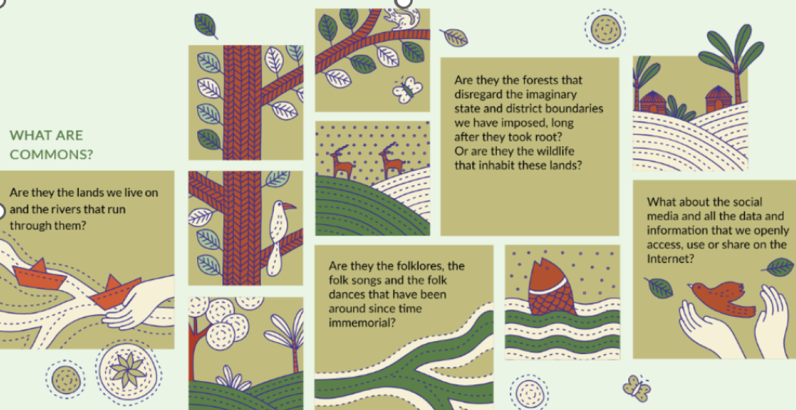

<!doctype html>
<html lang="en">
<head>
<meta charset="utf-8" />
<meta name="viewport" content="width=device-width, initial-scale=1" />
<title>Understanding Commons — Wireframe Prototype</title>
<style>
/* ============================================================
   UNDERSTANDING COMMONS — LOW-FIDELITY WIREFRAME PROTOTYPE
   Grayscale, structure-first. No brand color, no decoration.
   ============================================================ */
:root{
  --ink:#1f1f1f; --ink-2:#555; --ink-3:#7c7c7c;
  --line:#c9c9c9; --line-2:#e0e0e0;
  --bg:#f4f4f4; --panel:#fff; --panel-2:#fafafa;
  --fill:#ececec; --fill-2:#e2e2e2; --active:#2b2b2b;
  --radius:8px; --maxw:1320px; --gap:22px;
  --mono:"SFMono-Regular",Consolas,"Liberation Mono",Menlo,monospace;
}
*{box-sizing:border-box}
html,body{margin:0;padding:0}
body{font-family:-apple-system,BlinkMacSystemFont,"Segoe UI",Arial,sans-serif;color:var(--ink);background:var(--bg);font-size:14px;line-height:1.5}
a{color:inherit}img{max-width:100%}
[onclick]{cursor:pointer}
.ph-img[onclick]:hover,.video-ph[onclick]:hover{filter:brightness(.965)}

/* primitives */
.wf-note{font-size:11px;color:var(--ink-3);letter-spacing:.03em;text-transform:uppercase}
.ph-img{background:repeating-linear-gradient(45deg,transparent,transparent 9px,#e6e6e6 9px,#e6e6e6 10px),var(--fill);
  border:1px solid var(--line);border-radius:var(--radius);display:flex;align-items:center;justify-content:center;
  color:var(--ink-3);font-size:12px;text-align:center;min-height:120px;padding:8px}
.ph-line{height:10px;background:var(--fill);border-radius:3px;margin:7px 0}
.ph-line.w90{width:90%}.ph-line.w80{width:80%}.ph-line.w60{width:60%}.ph-line.w40{width:40%}.ph-line.w30{width:30%}
.icon-box{width:34px;height:34px;border:1px solid var(--line);border-radius:var(--radius);background:var(--panel-2);display:inline-flex;align-items:center;justify-content:center;font-size:16px;flex:0 0 auto}

/* buttons */
.btn{display:inline-flex;align-items:center;gap:7px;border:1px solid var(--ink);background:var(--panel);color:var(--ink);padding:9px 15px;border-radius:var(--radius);font-size:13px;cursor:pointer;text-decoration:none;white-space:nowrap;transition:background .12s}
.btn:hover{background:var(--fill)}
.btn.primary{background:var(--active);color:#fff;border-color:var(--active)}
.btn.primary:hover{background:#000}
.btn.sm{padding:6px 10px;font-size:12px}
.btn.link{border:none;background:none;padding:4px 0;text-decoration:underline;color:var(--ink)}
.btn.block{width:100%;justify-content:center}
.btn.btn-icon{padding:7px 9px;line-height:1}

/* layout */
.container{max-width:var(--maxw);margin:0 auto;padding:0 88px}
@media(max-width:1024px){.container{padding:0 40px}}
@media(max-width:600px){.container{padding:0 20px}}
header.site{background:var(--panel);border-bottom:1px solid var(--line);position:sticky;top:0;z-index:40}
.nav{display:flex;align-items:center;gap:14px;height:60px}
.logo{border:none;padding:6px 0;font-weight:700;letter-spacing:.04em;cursor:pointer;font-size:13px;flex:0 0 auto;line-height:1.1}
.logo small{display:block;font-weight:400;font-size:9px;color:var(--ink-3);letter-spacing:.08em}
.nav ul{list-style:none;display:flex;gap:2px;margin:0;padding:0;flex:1 1 auto;flex-wrap:wrap}
.nav a.navlink{text-decoration:none;color:var(--ink-2);font-size:13px;padding:7px 8px;border-radius:var(--radius);cursor:pointer;display:inline-block}
.nav a.navlink:hover{background:var(--fill)}
.nav a.navlink.active{color:var(--ink);background:var(--fill-2);font-weight:600}

.crumbs{padding:12px 0;font-size:12px;color:var(--ink-3)}
.crumbs a{color:var(--ink-2);text-decoration:none;cursor:pointer}
.crumbs a:hover{text-decoration:underline}
.crumbs span.sep{margin:0 7px;color:var(--line)}
.crumbs span.here{color:var(--ink);font-weight:600}
main{min-height:60vh;padding-bottom:40px}

.section{padding:34px 0}
.section h2{font-size:20px;margin:0 0 4px}
.section .sub{color:var(--ink-2);margin:0 0 18px;max-width:720px}
.eyebrow{font-size:11px;text-transform:uppercase;letter-spacing:.09em;color:var(--ink-3);margin-bottom:8px}
.panel{background:var(--panel);border:1px solid var(--line);border-radius:var(--radius);padding:20px}

.grid{display:grid;gap:var(--gap)}
.g2{grid-template-columns:repeat(2,1fr)}.g3{grid-template-columns:repeat(3,1fr)}.g4{grid-template-columns:repeat(4,1fr)}.g5{grid-template-columns:repeat(5,1fr)}
.row{display:flex;gap:var(--gap);flex-wrap:wrap}
.between{display:flex;align-items:center;justify-content:space-between;gap:12px;flex-wrap:wrap}

.card{background:var(--panel);border:1px solid var(--line);border-radius:var(--radius);padding:16px;display:flex;flex-direction:column;gap:10px}
.card h3{margin:0;font-size:15px}
.card p{margin:0;color:var(--ink-2);font-size:13px}
.card .cta{margin-top:auto}
.card.click{cursor:pointer;transition:transform .15s,box-shadow .15s,border-color .15s}
.card.click:hover{transform:translateY(-2px);border-color:var(--ink-3);box-shadow:0 14px 28px -16px rgba(30,30,30,.3)}

.hero{background:var(--panel);border:1px solid var(--line);border-radius:var(--radius);padding:34px;margin-top:18px}
.hero h1{font-size:30px;margin:0 0 12px;line-height:1.2}
.hero p.lead{font-size:16px;color:var(--ink-2);max-width:640px;margin:0 0 20px}

/* pathway */
.pathway{display:flex;flex-wrap:wrap;gap:8px;align-items:stretch}
.pw-step{flex:1 1 150px;min-width:130px;border:1px solid var(--line);border-radius:var(--radius);background:var(--panel);padding:11px 12px;cursor:pointer;transition:background .12s}
.pw-step:hover{background:var(--fill)}
.pw-step .num{font-family:var(--mono);font-size:11px;color:var(--ink-3)}
.pw-step .nm{font-size:13px;font-weight:600;margin-top:2px}
.pw-step.active{background:var(--active);border-color:var(--active)}
.pw-step.active .nm,.pw-step.active .num{color:#fff}
.pw-arrow{align-self:center;color:var(--line);font-size:16px}
.pw-flash{outline:2px solid var(--active);outline-offset:4px;border-radius:var(--radius);transition:outline-color .3s}
.chap-num{font-family:var(--mono);font-size:34px;font-weight:700;color:var(--line);line-height:1;margin-bottom:6px}
.pullquote{border-left:3px solid var(--ink);padding:6px 0 6px 18px;margin:4px 0;font-size:18px;line-height:1.5;color:var(--ink-2)}
.story-stat{display:flex;align-items:center;gap:14px;border:1px solid var(--line);border-radius:var(--radius);background:var(--panel-2);padding:14px 18px}
.story-stat b{font-family:var(--mono);font-size:30px;line-height:1}
.role-badge{font-size:11px;font-weight:600;border:1px solid var(--ink);border-radius:20px;padding:4px 10px;background:var(--fill-2);color:var(--ink);white-space:nowrap}
.profilew{position:relative}
.profilew-btn{display:inline-flex;align-items:center;gap:8px;border:1px solid var(--line);background:var(--panel);border-radius:20px;padding:4px 11px 4px 5px;cursor:pointer;font:inherit;font-size:13px;color:var(--ink)}
.profilew-btn:hover{background:var(--fill)}
.pw-av{width:26px;height:26px;border-radius:50%;background:var(--active);color:#fff;display:inline-grid;place-items:center;font-size:11px;font-weight:700;flex:none}
.pw-av.lg{width:44px;height:44px;font-size:15px}
.pw-name{font-weight:600}.pw-cv{color:var(--ink-3);font-size:11px}
.profilew.open .pw-cv{transform:rotate(180deg)}
.profilew-menu{position:absolute;right:0;top:calc(100% + 8px);width:232px;background:var(--panel);border:1px solid var(--line);border-radius:8px;box-shadow:0 16px 40px -12px rgba(30,30,30,.4);padding:6px;display:none;z-index:60}
.profilew.open .profilew-menu{display:block}
.pw-head{display:flex;align-items:center;gap:10px;padding:8px}
.pw-head b{display:block;font-size:14px}.pw-head span{font-size:11px;color:var(--ink-3)}
.pw-div{height:1px;background:var(--line-2);margin:5px 0}
.pw-item{display:flex;align-items:center;gap:9px;width:100%;background:none;border:0;padding:9px;border-radius:6px;font:inherit;font-size:13px;color:var(--ink);cursor:pointer;text-align:left}
.pw-item:hover{background:var(--fill)}
.pw-ic{width:18px;text-align:center}
.pw-item.danger{color:#8a1f1f}
.role-opt{display:flex;justify-content:space-between;align-items:center;gap:12px;border:1px solid var(--line);border-radius:var(--radius);padding:10px 12px;cursor:pointer;background:var(--panel);transition:background .12s}
.role-opt:hover{background:var(--fill)}
.role-opt .ro-tx b{display:block;font-size:13px}
.role-opt .ro-tx span{font-size:11px;color:var(--ink-3)}
.role-opt .ra{font-size:12px;color:var(--ink-2);white-space:nowrap}

/* resource card */
.rcard{background:var(--panel);border:1px solid var(--line);border-radius:var(--radius);padding:14px;display:flex;flex-direction:column;gap:9px}
.rcard .rc-top{display:flex;justify-content:space-between;gap:8px;align-items:flex-start}
.rcard h4{margin:0;font-size:14px;line-height:1.35}
.rcard .purpose{color:var(--ink-2);font-size:12.5px;margin:0}
.meta-tags{display:flex;flex-wrap:wrap;gap:6px}
.tag{font-size:11px;border:1px solid var(--line);border-radius:20px;padding:2px 9px;background:var(--panel-2);color:var(--ink-2);white-space:nowrap}
.tag.solid{background:var(--fill-2);border-color:var(--fill-2)}
.rc-actions{display:flex;gap:8px;margin-top:2px}
.rc-type-chip{font-size:10px;text-transform:uppercase;letter-spacing:.06em;color:var(--ink-3);border:1px dashed var(--line);border-radius:3px;padding:2px 6px}

/* filter sidebar */
.layout-side{display:grid;grid-template-columns:250px 1fr;gap:24px;align-items:start}
.filters{background:var(--panel);border:1px solid var(--line);border-radius:var(--radius);padding:16px;position:sticky;top:76px}
.fgroup{border-bottom:1px solid var(--line-2);padding:12px 0}
.fgroup:first-child{padding-top:0}
.fgroup h4{margin:0 0 9px;font-size:12px;text-transform:uppercase;letter-spacing:.05em;color:var(--ink-2)}
.fopt{display:flex;align-items:center;gap:8px;font-size:13px;color:var(--ink-2);padding:3px 0;cursor:pointer}
.fopt input{accent-color:var(--ink)}
.filter-actions{display:flex;gap:8px;margin-top:14px}

/* search bar */
.searchfield{display:flex;align-items:center;gap:10px;border:1px solid var(--line);background:var(--panel);border-radius:var(--radius);padding:11px 14px}
.searchfield input{border:none;outline:none;flex:1;font-size:14px;background:transparent}
.searchfield .icon-box{width:28px;height:28px;font-size:14px}

/* flow diagram */
.flow{display:flex;flex-wrap:wrap;align-items:center;gap:8px}
.flow .node{border:1px solid var(--line);background:var(--panel);border-radius:var(--radius);padding:10px 14px;font-size:13px;text-align:center;min-width:96px}
.flow .node.strong{border-width:1.5px;font-weight:600}
.flow .node .sub2{font-family:var(--mono);font-size:10px;color:var(--ink-3);display:block;margin-top:2px}
.flow .arw{color:var(--ink-3);font-size:15px}

/* qa / accordion */
.qa{border:1px solid var(--line);border-radius:var(--radius);background:var(--panel);overflow:hidden}
.qa .qitem{border-bottom:1px solid var(--line-2)}
.qa .qitem:last-child{border-bottom:none}
.qa .qq{padding:13px 16px;cursor:pointer;display:flex;justify-content:space-between;gap:10px;font-weight:600;font-size:14px}
.qa .qq:hover{background:var(--panel-2)}
.qa .qa-body{padding:0 16px 14px;color:var(--ink-2);font-size:13px}

.ctx-row{border:1px solid var(--line-2);border-radius:var(--radius);padding:12px 14px;background:var(--panel)}
.ctx-row h5{margin:0 0 4px;font-size:12px;text-transform:uppercase;letter-spacing:.04em;color:var(--ink-3)}
.ctx-row p{margin:0;color:var(--ink-2);font-size:13px}
.callout{border:1.5px solid var(--ink);border-radius:var(--radius);background:var(--panel-2);padding:16px;display:flex;gap:14px;align-items:center;justify-content:space-between;flex-wrap:wrap}
.callout .txt strong{display:block;font-size:14px}
.callout .txt span{font-size:13px;color:var(--ink-2)}
.video-ph{position:relative;min-height:150px}
.video-ph .play{width:52px;height:52px;border-radius:50%;border:2px solid var(--ink-3);display:flex;align-items:center;justify-content:center;font-size:20px;color:var(--ink-3)}
.reveal{border:1px solid var(--line-2);border-top:none;border-radius:0 0 var(--radius) var(--radius);background:var(--panel-2);padding:14px;font-size:13px;color:var(--ink-2)}
.hidden{display:none}

/* extra wireframe bits */
.wf-label{font-size:12px;color:var(--ink-2);font-weight:600;margin:0 0 6px;display:block}
.wf-field{border:1px solid var(--line);border-radius:var(--radius);background:var(--panel);padding:10px 12px;color:var(--ink-3);font-size:13px;display:flex;align-items:center;gap:8px}
.wf-field.area{min-height:64px;align-items:flex-start}
.field-block{margin-bottom:14px}
.stepbar{display:flex;gap:6px;margin-bottom:18px}
.stepbar i{flex:1;height:5px;background:var(--fill);border-radius:3px}
.stepbar i.on{background:var(--active)}
.tabs{display:flex;gap:6px;flex-wrap:wrap;border-bottom:1px solid var(--line-2);padding-bottom:10px;margin-bottom:16px}
.tab{border:1px solid var(--line);background:var(--panel);border-radius:20px;padding:6px 12px;font-size:12px;cursor:pointer}
.tab:hover{background:var(--fill)}
.tab.active{background:var(--active);color:#fff;border-color:var(--active)}
.stat{border:1px solid var(--line);border-radius:var(--radius);background:var(--panel);padding:14px}
.stat b{font-size:24px;display:block}
.stat span{font-size:11px;text-transform:uppercase;letter-spacing:.05em;color:var(--ink-3)}
.split{display:grid;grid-template-columns:1fr 1fr;border:1px solid var(--line);border-radius:var(--radius);overflow:hidden;background:var(--panel)}
.split .sl{padding:26px}.split .sr{background:var(--panel-2);padding:26px;display:flex;flex-direction:column;gap:12px;justify-content:center}
.dropdown{position:relative}
.dropdown-menu{position:absolute;left:0;right:0;top:calc(100% + 5px);background:var(--panel);border:1px solid var(--line);border-radius:var(--radius);box-shadow:0 14px 34px -10px rgba(30,30,30,.3);padding:5px;display:none;z-index:30}
.dropdown.open .dropdown-menu{display:block}
.dd-opt2{padding:8px 10px;border-radius:5px;font-size:13px;cursor:pointer;color:var(--ink)}
.dd-opt2:hover{background:var(--fill)}
.kanban{display:grid;grid-template-columns:repeat(4,1fr);gap:12px}
.kcol{background:var(--panel-2);border:1px solid var(--line);border-radius:var(--radius);padding:10px}
.kcol .kh{display:flex;justify-content:space-between;font-size:12px;font-weight:700;padding:2px 4px 10px;color:var(--ink-2)}
.kcard{background:var(--panel);border:1px solid var(--line);border-radius:var(--radius);padding:10px;margin-bottom:8px}
.kcard .kt{font-family:var(--mono);font-size:10px;color:var(--ink-3);text-transform:uppercase}
.kcard h4{margin:3px 0 2px;font-size:13px}
.kcard .kl{font-size:12px;color:var(--ink-3)}
.wrapline{display:flex;align-items:center;gap:10px;color:var(--ink-3);font-size:12px;margin:16px 0}
.wrapline::before,.wrapline::after{content:"";flex:1;border-top:1px solid var(--line-2)}
.legend-list{display:flex;flex-direction:column;gap:2px}
.legend-list .li{display:flex;align-items:center;gap:9px;padding:6px 4px;font-size:13px;color:var(--ink-2)}
.legend-list .sw{width:12px;height:12px;border:1px solid var(--line);border-radius:3px;background:var(--fill)}
.lscape{position:relative;min-height:360px;overflow:hidden;background:#eef1f4;border-radius:0}
.lscape>img{display:block;width:100%;height:auto}
.lpin{position:absolute;z-index:2;display:inline-flex;align-items:center;gap:7px;background:#fff;border:1px solid var(--line);
  border-radius:9px;padding:6px 11px;font-size:12.5px;font-weight:600;color:var(--ink);box-shadow:0 5px 14px -5px rgba(0,0,0,.35);cursor:pointer;white-space:nowrap}
.lpin .pico{width:16px;height:16px;display:inline-grid;place-items:center;font-size:13px}
.lpin small{display:block;font-weight:400;color:var(--ink-3);font-size:10.5px;text-transform:none;letter-spacing:0}
.sig-map{border:1px solid var(--line);border-radius:var(--radius);overflow:hidden;background:var(--panel)}
.sig-map-top{display:flex;align-items:center;justify-content:space-between;gap:10px;padding:10px 12px;border-bottom:1px solid var(--line-2);font-size:13px;font-weight:600}
.sig-map-top a{color:var(--ink-2);font-size:12px;font-weight:400;cursor:pointer;text-decoration:underline;white-space:nowrap}
.sig-map-canvas{position:relative;min-height:300px;border:none;border-radius:0}
.sig-zoom{position:absolute;top:10px;left:10px;display:flex;flex-direction:column;gap:4px}
.sig-zoom button{width:26px;height:26px;border:1px solid var(--line);background:var(--panel);border-radius:4px;font-size:15px;cursor:pointer;line-height:1;color:var(--ink)}
.sig-zoom button:hover{background:var(--fill)}
.sig-legend{display:flex;align-items:center;gap:8px;flex-wrap:wrap;padding:10px 12px;border-top:1px solid var(--line-2)}
.sig-scale{display:inline-flex;border:1px solid var(--line);border-radius:3px;overflow:hidden}
.sig-scale i{width:24px;height:12px;display:block}
.sig-scale i:nth-child(1){background:#ececec}.sig-scale i:nth-child(2){background:#d7d7d7}.sig-scale i:nth-child(3){background:#b7b7b7}.sig-scale i:nth-child(4){background:#8f8f8f}.sig-scale i:nth-child(5){background:#5f5f5f}
.sig-side{background:var(--active);color:#fff;border-radius:var(--radius);padding:18px}
.sig-side .wf-note{color:rgba(255,255,255,.68)}
.sig-side p{color:rgba(255,255,255,.85)!important;margin:0}
.sig-metric{text-align:center;padding:6px 0 2px}
.sig-metric-label{display:block;font-size:12px;color:rgba(255,255,255,.75)}
.sig-metric-val{display:block;font-size:38px;font-weight:800;line-height:1.1;margin:4px 0}
.sig-metric-unit{display:block;font-size:12px;color:rgba(255,255,255,.75)}
.sig-rank{margin:0;padding-left:20px}
.sig-rank li{font-size:13px;padding:4px 0;color:var(--ink-2)}
.sig-hint{display:flex;gap:8px;flex-wrap:wrap;margin:4px 0 16px}
.sig-hint .h{display:inline-flex;align-items:center;gap:7px;font-size:12px;color:var(--ink-2);background:var(--panel);border:1px solid var(--line-2);border-radius:20px;padding:5px 12px}
.sig-hint .h b{background:var(--active);color:#fff;border-radius:50%;width:17px;height:17px;display:inline-grid;place-items:center;font-size:10px;font-weight:700}
.tag.sigst{cursor:pointer}
.tag.sigst.active{background:var(--active);color:#fff;border-color:var(--active)}

footer.site{background:var(--panel);border-top:1px solid var(--line);margin-top:20px}
footer.site .cols{display:grid;grid-template-columns:1.4fr 1fr 1fr 1fr;gap:24px;padding:30px 0}
footer.site h5{margin:0 0 10px;font-size:12px;text-transform:uppercase;letter-spacing:.05em;color:var(--ink-2)}
footer.site ul{list-style:none;margin:0;padding:0}
footer.site li{padding:4px 0;color:var(--ink-3);font-size:13px;cursor:pointer}
footer.site li:hover{color:var(--ink);text-decoration:underline}
footer .bar{border-top:1px solid var(--line-2);padding:14px 0;font-size:12px;color:var(--ink-3);display:flex;justify-content:space-between;flex-wrap:wrap;gap:8px}

.overlay{position:fixed;inset:0;background:rgba(30,30,30,.35);z-index:60;display:none;align-items:flex-start;justify-content:center;padding-top:9vh}
.overlay.open{display:flex}
.searchpanel{background:var(--panel);border:1px solid var(--ink);border-radius:var(--radius);width:min(620px,92vw);padding:20px}
.searchpanel h3{margin:0 0 4px;font-size:18px}
.chips{display:flex;flex-wrap:wrap;gap:8px;margin-top:12px}
.chip{border:1px solid var(--line);border-radius:20px;padding:5px 12px;font-size:12px;cursor:pointer;background:var(--panel-2)}
.chip:hover{background:var(--fill)}

.mt8{margin-top:8px}.mt12{margin-top:12px}.mt16{margin-top:16px}.mt24{margin-top:24px}
.mb0{margin-bottom:0}.muted{color:var(--ink-3)}.stack{display:flex;flex-direction:column;gap:14px}

@media(max-width:1000px){.g4,.g5,.g3{grid-template-columns:repeat(2,1fr)}.layout-side{grid-template-columns:1fr}.filters{position:static}.kanban{grid-template-columns:1fr 1fr}footer.site .cols{grid-template-columns:1fr 1fr}}
@media(max-width:640px){.g2,.g3,.g4,.g5{grid-template-columns:1fr}.nav ul{display:none}.hero h1{font-size:24px}.split{grid-template-columns:1fr}.kanban{grid-template-columns:1fr}footer.site .cols{grid-template-columns:1fr}}
#proto-hint{position:fixed;bottom:12px;right:12px;z-index:50;background:var(--active);color:#fff;font-size:11px;padding:7px 12px;border-radius:20px;opacity:.85;cursor:pointer}
</style>
</head>
<body>
<div id="app"></div>
<div id="search-overlay" class="overlay"><div class="searchpanel" id="search-panel"></div></div>

<script>
/* ============ DATA ============ */
const TYPES=[
  {id:"forest",num:"01",name:"Forest Commons",local:"Van Panchayat · Devrai · Kan",desc:"The collective use and management of forest resources by local communities, based on the principle of shared governance — shared rights and responsibilities to access, use and manage forest resources.",
   mapNames:[
     ["Van","Village forests governed by traditional van panchayats, responsible for use & management within village boundaries."],
     ["Janglat / Khora / Dungar / Magra","Communities prevent tree felling & animal killing, organising efforts to safeguard the environment."],
     ["Jungle","Groups of 3–5 members patrol forests on rotation to deter illegal felling & fires — the vara patrol system."],
     ["Gramya Aranyalu","Community forests on revenue / reserve lands, managed via Vana Samrakshana Samitis."],
     ["Gram Van","Community-managed forests protected through rules on use & regeneration, especially NTFPs."],
     ["Raann","Village councils manage local forests — use, protection & conservation."],
     ["Aranya / Kaadu","Communities manage & protect specific forest areas through customary rules."],
     ["Kaadu","Forests protected via customary rules around grazing, firewood & NTFP collection."],
     ["Dzumsa","A traditional community institution managing forests through customary rules (grazing, timber, NTFP)."],
     ["Bargad Haans","The Tharu community manages community forests via customary practices & traditional ecological knowledge."],
     ["Law Kyntang / Law Adong / Songni","Communities practise 'bom da ka lamuh' to arrest fires & 'sein ding' to clear dry leaves."],
     ["Rambou / N'tiibang / Soudei","Traditional tree-lopping keeps trees healthy while branches regrow over time."],
     ["Ban / Jangal","Local tribal communities exercise customary rights & responsibilities for forest use & protection."],
     ["Khuntkatti","Traditional village forests owned & managed by Jharkhand communities via customary rules."],
     ["Gramya Jungle / Patra Jungle","In Odisha, the thengapali system shares forest patrol among households — often women-led."],
     ["Ban / Aaran","Communities eradicate invasive species to improve livelihoods & reduce human–wildlife conflict."],
     ["Dongri / Mari / Metta","Communities define boundaries & form forest committees; Nagvanshi Gond clans each protect a tree."]
   ]},
  {id:"pasture",num:"02",name:"Pasture Commons",local:"Gochar · Oran · Charnoi · Bugyal · Gairan",desc:"Village grazing lands designated for communal use by local communities for grazing livestock — a traditional system of shared resource management practised for centuries.",
   mapNames:[
     ["Aali / Bugyal / Charnoi","High-altitude pasture lands used for seasonal grazing by migratory pastoralists such as the Gaddis and Bakerwals."],
     ["Shamilat deh","Community-owned and -managed grazing lands where rules were enunciated and imposed by village management bodies."],
     ["Charnot / Charahat / Raah Charan","Cooperative grazing where households take turns herding the combined livestock of the community."],
     ["Gochar / Beed","Lands managed by the pastoral communities and crucial for their livelihoods."],
     ["Gairan","Designated community grazing lands where institutions ensure seasonal, rotational & cooperative grazing to ease pressure on the grasses."],
     ["Padasekharam","In Northern Kerala, managed by the Kurichiya & Kuruma communities — fields/lands used to grow grass or fodder for livestock."],
     ["Aramaram / Punjai","In the Nilgiri Biosphere Reserve, grazing lands used by the Toda community on a rotational basis to prevent overgrazing."],
     ["Kahcharai","Seasonal pasture lands used by the Changpa nomadic pastoralists for grazing livestock during the summer months."],
     ["Dzumsa","Community arrangement controlling large-scale seasonal movements — fixes movement dates and levies fines for deviation."],
     ["Charai Bhumi / Gochar","Institutions like Gram Panchayat & Gram Sabhas oversee the use, maintenance and protection of communal resources."],
     ["Charagah / Char / Gochar","Village grazing lands set aside for communal use, often managed by traditional institutions (Gair Majurwa in Bihar)."],
     ["Gada / Gade / Gomala","Grazing lands for livestock rearing, managed by local community institutions at village and panchayat levels."],
     ["Transhumance (Gaddi & Dhangar)","Transhumance practices deter overgrazing and soil deterioration, and help restore grasslands."],
     ["Brokpa (Arunachal Pradesh)","Altitude-based seasonal grazing with overgrazing restrictions and controlled fire burning to regenerate grasses."],
     ["Village grazing reserves (Manipur)","Village grazing reserves collectively owned, used and managed."]
   ]},
  {id:"water",num:"03",name:"Water Commons",local:"Eri · Beel · Kulam",desc:"All the surface, sub-surface and groundwater resources that are available for all people and ecosystems, at present and in future.",
   mapNames:[
     ["Kuhl","Surface channels divert water from naturally flowing streams (kuhls); communities enforce strict norms against individual gains."],
     ["Zings","Small, networked tanks that collect and direct water to channels — used for agriculture by rural communities."],
     ["Naula","Structures replenished by melting glaciers and forests in the higher ranges, managed by rural collectives."],
     ["Apatani","Rainwater collected in catchment areas — roofs, courtyards and roads — for conservation through run-off drainage."],
     ["Baoli and Kund","Baolis store rainwater for year-round supply; Kunds are circular underground wells harvesting rainwater for drinking."],
     ["Ahar Pynes","Ahar is a catchment basin with embankments on three sides; Pynes are diversion channels."],
     ["Dong Bundhs System","River canals to cultivation fields, dug, monitored and maintained by an elected community institution."],
     ["Johad / Tanka / Khadin","Johads are earthen check dams; tankas feed underground cisterns; the Khadin system harvests water in the Thar Desert."],
     ["Ruza and Zabo","Ruzas are high-elevation community pond networks for integrated farming; Zabo manages water, forests and farms in Kikruma."],
     ["Virdas / Vav","Vav is a step well; communities tap subsurface water from wells built through shared labour and resources."],
     ["Bamboo drip irrigation","Bamboo irrigates crops across rocky terrain and steep slopes; community groups ensure equity."],
     ["Bhandara Phad","Community-led irrigation of check dams across a river, from which canals distribute water into fields."],
     ["Dighi","Channels that redirect rainfall towards artificial reservoirs on the hilly outskirts of urban areas."],
     ["Pemghara","Recharge pits that percolate water slowly into the ground and replenish groundwater."],
     ["Honde","Part of the 'laat' system, which uses a pond to elevate water for irrigation."],
     ["Kaluva","A system of canals that supply water to large tanks, locally known as cheruvu."],
     ["Pat System and Kaata","Hill-stream water diverted to channels (pats) used on rotation; Kaata check dams extend flow by four to six weeks."],
     ["Kunte / Neeruganti","Kunte are earthen ponds for harvesting rainwater; Neeruganti is the village water manager ensuring fair distribution."],
     ["Keni","Shallow wooden structures in high water-table areas; water is used only for drinking and cooking."],
     ["Dabri","Small, circular storage ponds dug collectively by local communities."],
     ["Kulam and Oorani","Kulams are interconnected tank systems desilted by community institutions; Ooranis are village ponds that recharge groundwater."]
   ]},
  {id:"coastal",num:"04",name:"Coastal Commons",local:"Khazan · Padu · Ooru Panchayats",desc:"Diverse interacting resource systems — mangroves, beaches, estuaries and reefs — that support a variety of life forms and local livelihoods.",
   mapNames:[
     ["Pagadiya","Foot fishing in near-shore/intertidal areas; gear set in intertidal zones and catch depends on tidal movement — often individual, sometimes in small groups."],
     ["Khajindari fishing","Traditional hand-fishing in muddy coastal areas, mainly by women and young men — labour-intensive bending in marshy lands to catch fish and crabs."],
     ["Khazan","Community-managed areas reclaimed from coastal wetlands/salt marshes integrating farming, aquaculture and salt panning; run by a villagers' association (gaunkaris or bhau)."],
     ["Mogaveera","Traditional village councils enforce a monsoon fishing ban to disincentivise competition dangerous to smaller boats."],
     ["Fisher Jamaat (Minicoy Island)","Customary institution setting fishery rules; imposes a seasonal ban on baitfish during breeding (May–Sept), enforced by fines."],
     ["Sundarbans","Fisherfolk collectively gillnet across sea areas to avoid conflict; a fisherfolk association ensures harmony and resolves disputes with binding verdicts."],
     ["Ooru Panchayats","Democratically-elected institutions regulate members' fishing, negotiate with government on fisheries, and secure subsidies and support."],
     ["Padu System","Defines rights-holders, boundaries and sites; caste-, gear- and species-specific; uses a lottery for rotational, equitable access."],
     ["Common property (Odisha)","Local fisherfolk treat coastal areas as common property, managed spatially and temporally; gear uses local materials (pohala baskets, tana jal nets)."],
     ["Resource partitioning (N. Andhra)","Each community carries a net excluding other species; accidental catches are exchanged with other communities through reciprocal practices."]
   ]},
  {id:"cultural",num:"05",name:"Cultural Commons",local:"Oral Epics · Sacred Groves",desc:"Cultures located in time and space, shared and expressed by socially cohesive communities — from traditional knowledge to artistic movements; a system of intellectual resources available in a given geographical or virtual area.",sub:[["Oral Epics","Narrative poems or tales composed and transmitted orally, often over many generations, before being written down."],["Sacred Groves","Patches of nearly untouched vegetation devoted to ancestral spirits or deities, safeguarded based on religious convictions."]],
   maps:[
     {label:"Oral Epics", names:[
       ["Goga","Epic of Guga, a Rajput prince revered for snake control in the monsoons; narrated by Jogi-caste Bhagats with drum and sarangi."],
       ["Dhola","Romantic epic across Rajasthan, western UP and Chhattisgarh, spanning three generations — love, loyalty and society in multi-caste peasant communities."],
       ["Devnarayan","Story of Devnarayan (an incarnation of Vishnu) and the 24 Bagaravat brothers of the Gujar community; sung with a painted scroll at all-night ceremonies."],
       ["Pabuji","Medieval epic honouring the Rathor Rajput hero Pabuji; performed by the Nayak caste with a 15-foot painting called 'par'."],
       ["Lorik-Canda","Epic of Candaini and Lorik with 36 lores; git (song) and naca (dance-drama), performed across North India up to Chhattisgarh."],
       ["Alha","12th-century epic of brothers Alha and Udal battling their enemies; performed at night during the monsoon."],
       ["Palnadu","Tale of Alugu Raju, celebrated in Andhra's Telugu region; the main singer sings with rituals to goddess Ankamma at the Karempudi festival."],
       ["Kanyaka","Sacrificial epic of the Komati trader caste of Penugonda, Andhra; traditionally sung by Mailaru-caste singers."],
       ["Paddana","Oral epic tradition of Tulu-speaking southern India; sung stories of local deities and heroes that preserve Tulu folklore."],
       ["Tolubommalata","Leather-puppet retelling of the Ramayana and Mahabharata in Andhra and eastern Karnataka, performed at weddings and post-harvest celebrations."],
       ["Ellamma","South-Indian folk tradition (Karnataka, Andhra, Maharashtra) on devotion, chastity, caste and divine justice, transmitted through folk song."],
       ["Bow Song","From a 7th-century Tamil poem; short narratives reflecting folk Hinduism's heroism, spirits and healing."],
       ["Teyyam","Ritualistic folk art incorporating oral narratives, myths and legends of deities and heroes."],
       ["Annanmar","15th-century martial folk epic of three siblings, performed in temple courtyards; some versions centre the sister."]
     ]},
     {label:"Sacred Groves", names:[
       ["Dev Van","Spiritually significant groves revered as abodes of local deities; in Uttarakhand, governed by community institutions overseeing management and protection."],
       ["Orans / Dev Banni","Remnants of ancient forestlands harbouring endangered and endemic plants; collection of fuel, fodder and medicinal plants is regulated — only fallen fruit or dead timber used."],
       ["Devdungar","Bhil, Rathwa and Gamit tribes manage sacred groves within villages, guided by traditional governance and spiritual leaders."],
       ["Devrai","'God's forests' — small sacred forestlands protected by folk knowledge; entirely or partly protected, sheltering rare animals, birds and vegetation."],
       ["Devarakadu","Western Ghats groves: smaller ones fully protected (no felling); larger ones as resource forests offering deadwood, non-wood produce and palm toddy."],
       ["Kaavu","Rich ecological spaces where trees and resources are preserved through rituals, religious practice, art and oral belief."],
       ["Kovil Kadu","In Tamil Nadu, groves as nature worship protected by custom and taboo since ancient times — repositories of biodiversity found nowhere else."],
       ["Gompa Forest","Sacred groves managed by Lamas of Buddhist monasteries and the Mompa tribe; harming animals is prohibited and trees are held sacred."],
       ["Than","Forest-dwelling Bodo and Rabha tribes protect these groves; trees and animals are sacred and killing is barred during mating season."],
       ["Law Kyntang","In Meghalaya, community rules forbid taking anything from the forest — not even a twig — from the belief that God exists in all things."],
       ["Jaherthan or Sarana","Smaller groves fully protected (no extraction); in larger groves, under supervision, locals may gather fallen deadwood and non-wood produce."],
       ["Garamthan / Jahiristhan","Taboos differ between Hindu-managed and tribal (Kora, Santali) groves; seen as sites that foster solidarity through annual rituals and festivals."],
       ["Jaheras","Extremely sacred to many Odisha communities; trees are abodes of deities and felling, plucking, killing or grazing inside are grave taboos."],
       ["Bade Dev ka Sthan","Conserved by local communities for spiritual and ecological significance; sites for religious rituals and biodiversity."],
       ["Devgudi or Sarana","Integral to tribal cultures; house rare flora and fauna and serve as gene pools where communities disperse seeds among the groves."]
     ]}
   ]}
];
function typeById(id){return TYPES.find(t=>t.id===id)}
const ACTORS=["Biodiversity","Fisherfolk","Pastoralists","Migrants","Government"];
const LOCAL_NAMES=[
  ["Gochar / Beed","Rajasthan","Pasture"],["Oran","Rajasthan","Pasture"],["Bugyal / Aali","Uttarakhand","Pasture"],
  ["Shamilat deh","Punjab","Pasture"],["Gairan","Maharashtra","Pasture"],["Kahcharai","Ladakh","Pasture"],
  ["Dzumsa","Sikkim","Pasture"],["Padasekharam","Kerala","Pasture"],["Gada / Gomala","Karnataka","Pasture"],
  ["Devrai / Kan","Maharashtra","Forest"],["Van Panchayat","Uttarakhand","Forest"],["Law Kyntang","Meghalaya","Forest"],
  ["Eri / Kulam","Tamil Nadu","Water"],["Beel","West Bengal","Water"],["Kavu","Kerala","Coastal"]
];
const SECTIONS=[
  {href:"#/what",k:"What are Commons",q:"The idea",d:"Tangible & intangible shared resources — content, questions, video, quiz."},
  {href:"#/types",k:"Types of Commons",q:"A living landscape",d:"Forest, water, pasture, coastal, cultural — spotlight & local-names map."},
  {href:"#/significance",k:"Significance",q:"Why they matter",d:"Ecological, social, economic value + threats, mapped state-wise."},
  {href:"#/commoning",k:"Commoning Around Us",q:"You are a commoner",d:"Field stories, films and galleries of everyday commoning."},
  {href:"#/library",k:"Resources",q:"Knowledge hub",d:"Searchable repository of research, infographics and datasets."},
  {href:"#/contribute",k:"Contribute",q:"Crowdsourcing",d:"Add a local name or rule with GPS — reviewed before publishing."}
];
const STORIES=[
  {id:"nagaland-forest",title:"The village that governs its own forest",system:"Forest",state:"Nagaland",excerpt:"A community council writes and enforces the rules that keep its woodland standing."},
  {id:"tn-tanks",title:"Reviving the cascading tanks",system:"Water",state:"Tamil Nadu",excerpt:"Villagers desilt and restore a chain of ancient irrigation tanks, one monsoon at a time."},
  {id:"guj-pasture",title:"Herders of the grasslands",system:"Pasture",state:"Gujarat",excerpt:"Seasonal migration keeps both livestock and grassland alive across the year."}
];
function storyById(id){return STORIES.find(s=>s.id===id)}
const RES=[
  {id:"our-commons",title:"Our Commons — publication",purpose:"A deep-dive reader on the commons of India.",type:"Publication",theme:"All",audience:"General",fmt:"PDF",lang:"English",tags:["Publication","Overview"]},
  {id:"sacred-groves",title:"Sacred Groves of India — infographic",purpose:"Poster on India's sacred grove traditions.",type:"Infographic",theme:"Forest",audience:"Students",fmt:"PNG",lang:"English",tags:["Infographic","Forest"]},
  {id:"commons-matrix",title:"Commons Matrix (state × theme)",purpose:"State- and theme-wise content dataset.",type:"Dataset",theme:"All",audience:"Researchers",fmt:"XLSX",lang:"English",tags:["Data","All states"]},
  {id:"tank-systems",title:"Cascading Tank Systems — case study",purpose:"How tank irrigation commons are governed and revived.",type:"Case study",theme:"Water",audience:"Practitioners",fmt:"PDF",lang:"English",tags:["Case study","Water"]},
  {id:"grazing-brief",title:"Pastoralism & Grazing Commons brief",purpose:"Policy brief on grazing commons and pastoralists.",type:"Policy brief",theme:"Pasture",audience:"Policymakers",fmt:"PDF",lang:"Hindi",tags:["Policy","Pasture"]},
  {id:"coastal-essay",title:"Coastal Commons — photo essay",purpose:"Photo essay on shorelines and fishing commons.",type:"Story",theme:"Coastal",audience:"General",fmt:"PDF",lang:"English",tags:["Story","Coastal"]},
  {id:"forest-rights-act",title:"Forest Rights Act — a plain-language explainer",purpose:"What the Forest Rights Act means for community forest governance.",type:"Guide",theme:"Forest",audience:"Practitioners",fmt:"PDF",lang:"English",tags:["Guide","Forest","Policy"]},
  {id:"oral-epics",title:"Oral Epics of India — infographic",purpose:"A map of India's oral epic traditions and the communities that keep them.",type:"Infographic",theme:"Cultural",audience:"General",fmt:"PNG",lang:"English",tags:["Infographic","Cultural"]},
  {id:"water-harvesting",title:"Traditional Water Harvesting — handbook",purpose:"Johads, tankas, eris and kunds — how communities harvest and share water.",type:"Guide",theme:"Water",audience:"Practitioners",fmt:"PDF",lang:"Hindi",tags:["Guide","Water"]},
  {id:"pastoralism-atlas",title:"Pastoralists of India — atlas",purpose:"Grazing routes, seasonal pastures and the commons that sustain herders.",type:"Report",theme:"Pasture",audience:"Researchers",fmt:"PDF",lang:"English",tags:["Atlas","Pasture"]},
  {id:"fisherfolk-voices",title:"Voices of the Fisherfolk — film",purpose:"Short film on self-governed fishing grounds and closed seasons.",type:"Film",theme:"Coastal",audience:"General",fmt:"MP4",lang:"English",tags:["Film","Coastal"]},
  {id:"commoning-primer",title:"What is Commoning? — primer",purpose:"A short reader introducing commoning as an everyday practice.",type:"Publication",theme:"All",audience:"Students",fmt:"PDF",lang:"English",tags:["Publication","Overview"]},
  {id:"local-names-dataset",title:"Local Names of Commons — dataset",purpose:"Crowdsourced local names for commons, by state and type.",type:"Dataset",theme:"All",audience:"Researchers",fmt:"CSV",lang:"English",tags:["Data","Local names"]},
  {id:"significance-brief",title:"Why Commons Matter — policy brief",purpose:"Ecological, social and economic value of the commons, for policymakers.",type:"Policy brief",theme:"All",audience:"Policymakers",fmt:"PDF",lang:"English",tags:["Policy","Significance"]},
  {id:"van-panchayat",title:"Van Panchayats of Uttarakhand — case study",purpose:"How village forest councils govern shared woodland.",type:"Case study",theme:"Forest",audience:"Practitioners",fmt:"PDF",lang:"Hindi",tags:["Case study","Forest"]},
  {id:"sacred-groves-gazetteer",title:"Sacred Groves — a state gazetteer",purpose:"A directory of sacred groves and their local names across India.",type:"Dataset",theme:"Cultural",audience:"Researchers",fmt:"XLSX",lang:"English",tags:["Data","Cultural"]}
];
function resById(id){return RES.find(r=>r.id===id)}
const ROLES=[
  ["Visitor","Browse & search; download documents and infographics"],
  ["Registered User","Browse & search; feedback & comment; contribute data"],
  ["Organization Moderator","Approve / manage content; moderation dashboard; reports"],
  ["Organization Administrator","Manage users & own-org content; dashboards; reports"],
  ["Platform Moderator","Manage & archive content across the platform"],
  ["Platform Super Admin","Highest level of control — full access"]
];
/* capability flags per role (drives what each role sees) */
const ROLE_CAN=[
  {contribute:false,moderate:false,admin:false},
  {contribute:true, moderate:false,admin:false},
  {contribute:true, moderate:true, admin:false},
  {contribute:true, moderate:true, admin:true},
  {contribute:true, moderate:true, admin:false},
  {contribute:true, moderate:true, admin:true}
];
let currentRole=null; /* null = signed out (guest) */
let loginRole=ROLES.length-1; /* role selected on the login form (default: Super Admin) */
function toggleLoginRole(e){e.stopPropagation();const d=document.getElementById('loginRoleDD');if(d)d.classList.toggle('open');}
function loginPickRole(i){loginRole=i;const f=document.getElementById('loginRoleField');if(f)f.textContent='🛡 '+ROLES[i][0];const c=document.getElementById('loginRoleDesc');if(c)c.textContent=ROLES[i][1];const d=document.getElementById('loginRoleDD');if(d)d.classList.remove('open');}
function loginSubmit(){loginAs(loginRole);}
function roleCan(f){ return currentRole!=null && ROLE_CAN[currentRole][f]; }
function loginAs(i){ currentRole=i; try{localStorage.setItem('uc_role',i);}catch(e){} toast('Signed in as '+ROLES[i][0]); go('#/home'); }
function signOut(){ currentRole=null; try{localStorage.removeItem('uc_role');}catch(e){} toast('Signed out'); go('#/home'); }
function roleBanner(){
  if(currentRole==null) return `<div class="callout"><div class="txt"><strong>You're browsing as a guest</strong><span>Sign in and pick a role to unlock role-based features — contributing data, moderation and admin tools.</span></div><a class="btn primary" onclick="go('#/login')">Sign in →</a></div>`;
  const c=ROLE_CAN[currentRole];
  const caps=[["Browse & search",true],["Feedback & comment",currentRole>=1],["Contribute data",c.contribute],["Moderation",c.moderate],["Manage users & settings",c.admin]];
  return `<div class="panel"><div class="between"><div><div class="wf-note">Signed in — role-based view</div><h3 style="margin:2px 0 0;font-size:16px">${ROLES[currentRole][0]}</h3><p class="muted" style="margin:4px 0 0">${ROLES[currentRole][1]}</p></div><a class="btn sm" onclick="signOut()">Sign out</a></div>
    <div class="meta-tags mt12">${caps.map(x=>`<span class="tag ${x[1]?'solid':''}">${x[1]?'✓':'✕'} ${x[0]}</span>`).join("")}</div></div>`;
}
const WORKFLOW=[
  {t:"Pending",r:"contributor"},{t:"Reviewed",r:"moderator"},{t:"Approved",r:"moderator / admin"},{t:"Published",r:"admin"}
];
/* Significance themes (SRS §2.1.4) — four thematic, state-wise maps from the Commons Matrix */
const SIG=[
  {key:"Ecological",tag:"Ecological Significance",
   lead:"Commons deliver everyday environmental services — sheltering biodiversity, recharging water and steadying the climate.",
   map:"Ecological services layer — forests, water & carbon",
   mapTitle:"Share of forest area in district land area",
   metric:["Average value of ecosystem services","$2,108","USD / ha / year"],
   rank:["Most valuable ecosystem services",["Provisioning — fodder, fuel & NTFP","Water regulation & recharge","Carbon storage & climate"]],
   stats:[["Biodiversity","refuge & seed diversity"],["Water","recharge & flood buffer"],["Climate","carbon store & cooling"]],
   points:[
     ["Biodiversity refuge","Sacred groves, mangroves and community forests shelter species and native seed diversity."],
     ["Water security","Tanks, ponds and catchments recharge groundwater and soften floods and droughts."],
     ["Climate buffer","Forests and grasslands store carbon and cool local microclimates."],
     ["Living soils","Grazing lands and woodlands keep soils fertile and support pollinators."]],
   states:["Nagaland — community forests","Tamil Nadu — cascading tanks","Rajasthan — oran groves"],
   link:["Sacred Groves infographic","#/resource/sacred-groves"]},
  {key:"Socio-Cultural",tag:"Socio-Cultural Significance",
   lead:"Commons hold identity, faith and shared knowledge — the social fabric that binds communities together.",
   map:"Socio-cultural layer — sacred & shared landscapes",
   mapTitle:"Density of sacred groves & shared spaces by district",
   metric:["Sites of cultural significance","100,000+","sacred groves mapped"],
   rank:["Most common shared spaces",["Sacred groves & kavus","Community tanks & wells","Festival & grazing grounds"]],
   stats:[["Identity","belonging & festivals"],["Sacred","groves, tanks & hills"],["Knowledge","seeds, craft & medicine"]],
   points:[
     ["Sacred landscapes","Groves, tanks and hills carry ritual, memory and a sense of belonging."],
     ["Traditional knowledge","Seeds, medicine and craft passed down as a shared inheritance."],
     ["Community institutions","Collective care builds trust, cooperation and local self-governance."],
     ["Inclusion","Commons give the landless and marginalised a real stake in resources."]],
   states:["Meghalaya — sacred forests","Kerala — kavu groves","Odisha — community tanks"],
   link:["Our Commons — publication","#/resource/our-commons"]},
  {key:"Economic",tag:"Economic Significance",
   lead:"Commons are a quiet economy — fodder, fuel, food and a safety-net that rural households depend on.",
   map:"Economic layer — livelihoods, fisheries & produce",
   mapTitle:"Household dependence on commons for income",
   metric:["Rural income from commons","~₹6,000","per household / year"],
   rank:["Top income sources",["Fodder & grazing","Fuelwood & NTFP","Coastal & inland fisheries"]],
   stats:[["Livelihoods","fodder, fuel & produce"],["Fisheries","coastal incomes"],["Safety-net","drought & lean seasons"]],
   points:[
     ["Livelihood base","Fodder, fuelwood and non-timber forest produce underpin rural incomes."],
     ["Fisheries & coasts","Shared shorelines and waters sustain fisherfolk livelihoods."],
     ["Household safety-net","Commons cushion families through drought and lean seasons."],
     ["Local enterprise","Honey, bamboo, craft and eco-tourism build on the commons."]],
   states:["Gujarat — grazing commons","Kerala — coastal fisheries","Madhya Pradesh — NTFP forests"],
   link:["Grazing Commons brief","#/resource/grazing-brief"]},
  {key:"Threats & Challenges",tag:"Threats & Challenges",
   lead:"Commons are under pressure — shrinking, degrading and slipping out of community control across states.",
   map:"Pressure layer — encroachment, degradation & tenure gaps",
   mapTitle:"Commons under pressure by district",
   metric:["Common land lost (2005–2015)","~24%","of mapped commons"],
   rank:["Leading pressures",["Encroachment & diversion","Degradation & pollution","Weak tenure & records"]],
   stats:[["Encroachment","land occupied & diverted"],["Degradation","over-use & pollution"],["Tenure","weak records & rights"]],
   points:[
     ["Encroachment","Commons are occupied, fenced or diverted to other uses."],
     ["Privatisation","Shared land is titled and lost to the community."],
     ["Degradation","Over-use, pollution and neglect erode ecological health."],
     ["Weak governance","Unclear tenure and thin records leave commons unprotected."]],
   states:["Peri-urban fringes — diversion","Mining belts — degradation","Unrecorded commons — weak tenure"],
   link:["Contribute a local rule","#/contribute?kind=rule"]}
];
const SIG_STATES=["Andhra Pradesh","Gujarat","Kerala","Madhya Pradesh","Meghalaya","Nagaland","Odisha","Rajasthan","Tamil Nadu"];

/* ============ NAV / SHELL ============ */
const NAV=[
  {id:"#/home",label:"Home"},{id:"#/what",label:"What are Commons"},{id:"#/types",label:"Types of Commons"},
  {id:"#/commoning",label:"Commoning"},
  {id:"#/library",label:"Resources"},{id:"#/contribute",label:"Contribute"}
];
function header(active){
  const visible=NAV.filter(n=> n.id==='#/admin'?roleCan('moderate') : true);
  let authArea;
  if(currentRole==null){ authArea=`<a class="btn sm primary" onclick="go('#/login')">Sign in</a>`; }
  else{ const nm=ROLES[currentRole][0]; const ini=nm.split(' ').map(w=>w[0]).join('').slice(0,2).toUpperCase();
    authArea=`<div class="profilew" id="profilew"><button class="profilew-btn" onclick="toggleProfileW(event)"><span class="pw-av">${ini}</span><span class="pw-name">${nm}</span><span class="pw-cv">▾</span></button>`
      +`<div class="profilew-menu"><div class="pw-head"><span class="pw-av lg">${ini}</span><div><b>${nm}</b><span>Signed-in role</span></div></div><div class="pw-div"></div>`
      +`<button class="pw-item" onclick="pwClose();go('#/profile')"><span class="pw-ic">👤</span> My Profile</button>`
      +`<button class="pw-item" onclick="pwClose();go('#/password')"><span class="pw-ic">🔑</span> Change Password</button>`
      +`<div class="pw-div"></div><button class="pw-item danger" onclick="signOut()"><span class="pw-ic">⎋</span> Logout</button></div></div>`; }
  return `<header class="site"><div class="container"><nav class="nav">
    <div class="logo" onclick="go('#/home')">UNDERSTANDING<small>COMMONS · PLATFORM</small></div>
    <ul>${visible.map(n=>`<li><a class="navlink ${active===n.id?'active':''}" onclick="go('${n.id}')">${n.label}</a></li>`).join("")}</ul>
    <a class="btn sm btn-icon" onclick="openSearch()" title="Search" aria-label="Search">🔍</a>
    ${authArea}
  </nav></div></header>`;
}
function crumbs(items){
  return `<div class="container"><div class="crumbs">${items.map((it,i)=>{
    const last=i===items.length-1;
    return last?`<span class="here">${it.label}</span>`:`<a onclick="go('${it.href}')">${it.label}</a><span class="sep">/</span>`;
  }).join("")}</div></div>`;
}
function footer(){
  return `<footer class="site"><div class="container">
    <div class="cols">
      <div><div class="logo" style="display:inline-block" onclick="go('#/home')">UNDERSTANDING<small>COMMONS · PLATFORM</small></div>
        <p class="muted mt12" style="max-width:260px">An educational module of the Commons Platform — building awareness of India's shared resources.</p></div>
      <div><h5>Explore</h5><ul><li onclick="go('#/what')">What are Commons</li><li onclick="go('#/types')">Types of Commons</li><li onclick="go('#/significance')">Significance</li><li onclick="go('#/commoning')">Commoning</li></ul></div>
      <div><h5>Participate</h5><ul><li onclick="go('#/contribute')">Contribute Data</li><li onclick="go('#/library')">Resources</li><li onclick="go('#/admin')">Moderation</li><li onclick="openSearch()">Search</li><li onclick="go('#/help')">Help &amp; Flow</li><li onclick="go('#/login')">Sign in</li></ul></div>
      <div><h5>Platform</h5><ul><li>India Observatory</li><li>About the DPI</li><li>Accessibility (WCAG AA)</li><li>Privacy & Terms</li></ul></div>
    </div>
    <div class="bar"><span>Understanding Commons — low-fidelity wireframe</span><span class="wf-note">Placeholder content · Prototype</span></div>
  </div></footer>`;
}
function shell(active,crumbItems,body){
  return header(active)+(crumbItems?crumbs(crumbItems):"")+`<main><div class="container">${body}</div></main>`+footer();
}

/* reusable: commons-types pathway */
function typesPathway(activeId){
  return `<div class="pathway">${TYPES.map((t,i)=>`
    <div class="pw-step ${t.id===activeId?'active':''}" onclick="go('#/type/${t.id}')"><div class="num">${t.num}</div><div class="nm">${t.name.replace(' Commons','')}</div></div>
    ${i<TYPES.length-1?'<div class="pw-arrow">→</div>':''}`).join("")}</div>`;
}
/* reusable: moderation workflow flow */
function workflowFlow(){
  return `<div class="flow">${WORKFLOW.map((w,i)=>`
    <div class="node ${i===WORKFLOW.length-1?'strong':''}">${w.t}<span class="sub2">${w.r}</span></div>
    ${i<WORKFLOW.length-1?'<div class="arw">→</div>':''}`).join("")}</div>`;
}
function resourceCard(r){
  return `<div class="rcard"><div class="rc-top"><h4>${r.title}</h4><span class="rc-type-chip">${r.type}</span></div>
    <p class="purpose">${r.purpose}</p>
    <div class="meta-tags"><span class="tag">${r.theme}</span><span class="tag">${r.audience}</span><span class="tag">${r.fmt}</span><span class="tag">${r.lang}</span></div>
    <div class="rc-actions"><a class="btn sm primary" onclick="go('#/resource/${r.id}')">View</a><a class="btn sm" onclick="toast('Download (placeholder): ${r.title}')">Download</a></div></div>`;
}
function filterSidebar(){
  const box=items=>items.map(i=>`<label class="fopt"><input type="checkbox"> ${i}</label>`).join("");
  return `<aside class="filters">
    <div class="fgroup"><h4>Format</h4>${box(["PDF documents","Infographics","Datasets","Films"])}</div>
    <div class="fgroup"><h4>Type of Common</h4>${box(TYPES.map(t=>t.name.replace(' Commons','')))}</div>
    <div class="fgroup"><h4>Audience</h4>${box(["General public","Students","Researchers","Policymakers"])}</div>
    <div class="fgroup"><h4>Language</h4>${box(["English","Hindi","Other"])}</div>
    <div class="filter-actions"><a class="btn sm primary" onclick="toast('Filters applied (placeholder)')">Apply</a><a class="btn sm" onclick="toast('Cleared (placeholder)')">Clear</a></div>
  </aside>`;
}

/* ============ SCREENS ============ */
const screens={};

screens.home=()=>shell("#/home",null,`
  <div class="hero">
    <div class="grid" style="grid-template-columns:1.3fr 1fr;gap:24px;align-items:center">
      <div>
        <div class="eyebrow">Introductory Paragraph · SRS §2.1.1</div>
        <h1>Our shared inheritance, our shared responsibility</h1>
        <p class="lead">An educational module that introduces the idea of Commons, their diverse local names and significance, and the acts of commoning that sustain them across India.</p>
        <div class="row"><a class="btn primary" onclick="go('#/what')">Start exploring →</a><a class="btn" onclick="go('#/contribute')">Contribute local knowledge</a></div>
        <div class="wf-note mt16">Two ways in — <strong>learn</strong> (What → Types → Significance → Commoning) or <strong>participate</strong> (Contribute · Resources)</div>
      </div>
      <div class="lscape" style="min-height:250px;border:1px solid var(--line);border-radius:var(--radius);background:#fff">
        
        <div class="ph-img" style="display:none;position:absolute;inset:0;border:none;border-radius:0;flex-direction:column;gap:8px">
          <div class="icon-box" style="width:42px;height:42px;font-size:22px">＋</div>
          <div style="font-weight:600;color:var(--ink-2)">Add hero image</div>
          <div class="wf-note">drop file as home-hero.png</div>
        </div>
      </div>
    </div>
  </div>


  <section class="section">
    <div class="eyebrow">Explore the module</div>
    <h2>Six areas to explore</h2>
    <p class="sub">The module is organised around the idea, its forms, its significance, and how people take part.</p>
    <div class="grid g3">
      ${SECTIONS.map(s=>`<div class="card click" onclick="go('${s.href}')"><div class="wf-note">${s.q}</div><h3>${s.k}</h3><p>${s.d}</p><div class="cta"><a class="btn sm">Open →</a></div></div>`).join("")}
    </div>
  </section>

  <section class="section">
    <div class="between"><div><div class="eyebrow">The five families</div><h2 class="mb0">Types of Commons</h2></div><a class="btn sm" onclick="go('#/types')">Explore Types →</a></div>
    <p class="sub">Click a type to open its page. Each has its own local names across states.</p>
    ${typesPathway(null)}
  </section>

  <section class="section">
    <div class="grid g2">
      <div class="panel"><div class="eyebrow">Interactive Map</div><h2 style="margin:0 0 8px;font-size:18px">Local names, state by state</h2>
        <div class="ph-img" style="min-height:150px" onclick="go('#/types')">India map — local-name markers (placeholder)</div>
        <div class="mt12"><a class="btn sm" onclick="go('#/types')">Open the map →</a></div></div>
      <div class="panel"><div class="eyebrow">New to Commons?</div><h2 style="margin:0 0 8px;font-size:18px">Start with a 5-minute introduction</h2>
        <div class="ph-img video-ph" onclick="go('#/what')"><div class="play">▶</div></div>
        <div class="mt12"><a class="btn sm" onclick="go('#/what')">Watch & learn →</a></div></div>
    </div>
  </section>


  <section class="section">
    <div class="between"><div><div class="eyebrow">See it on the ground</div><h2 class="mb0">Commoning in Action</h2></div><a class="btn sm" onclick="go('#/commoning')">All stories →</a></div>
    <p class="sub">Short field stories showing what commoning looks like in practice.</p>
    <div class="grid g3">${STORIES.map(s=>`<div class="card click" onclick="go('#/story/${s.id}')"><div class="ph-img" style="min-height:80px">Field photo — placeholder</div><h3 style="font-size:14px">${s.title}</h3><div class="meta-tags"><span class="tag">${s.system}</span><span class="tag">${s.state}</span></div><div class="cta"><a class="btn sm">Read the Story →</a></div></div>`).join("")}</div>
  </section>

  <section class="section">
    <div class="eyebrow">Sample user flow · SRS §8</div><h2>From exploring to published</h2>
    <p class="sub">The end-to-end crowdsourcing journey defined in the SRS.</p>
    <div class="flow">
      <div class="node strong" onclick="go('#/what')">Visitor explores content<span class="sub2">public</span></div><div class="arw">→</div>
      <div class="node" onclick="go('#/contribute')">Submits local commons info<span class="sub2">contributor</span></div><div class="arw">→</div>
      <div class="node" onclick="go('#/admin')">Reviewer verifies<span class="sub2">moderator</span></div><div class="arw">→</div>
      <div class="node" onclick="go('#/admin')">Admin publishes<span class="sub2">admin</span></div><div class="arw">→</div>
      <div class="node strong" onclick="go('#/types')">Displayed on website<span class="sub2">on the map</span></div>
    </div>
  </section>

  <section class="section">
    <div class="callout"><div class="txt"><strong>Contribute the commons you know</strong><span>Add a local name or rule — reviewed before it appears on the map.</span></div><a class="btn primary" onclick="go('#/contribute')">Become a contributor →</a></div>
  </section>
`);

screens.what=()=>{
  return shell("#/what",[{label:"Home",href:"#/home"},{label:"What are Commons"}],`
  <div class="hero">
    <div class="grid" style="grid-template-columns:1.3fr 1fr;gap:24px;align-items:center">
      <div>
        <div class="eyebrow">What are Commons · SRS §2.1.2</div>
        <h1 style="font-size:28px;margin:6px 0 12px">What are Commons</h1>
        <p class="lead" style="margin:0">Commons are tangible and intangible resources (goods and services) used and managed by communities or collectives for their shared benefit. Commons are of various forms — from natural resources such as land, water, and forests to cultural and traditional knowledge, and from digital and internet-based resources to the outer spaces as we know it.</p>
        <div class="wf-note mt16">Introductory paragraph · content by India Observatory (Pratiti)</div>
      </div>
      <div class="lscape" style="min-height:250px;border:1px solid var(--line);border-radius:var(--radius);background:#fff">
        
        <div id="wac-hero-ph" class="ph-img" style="display:none;position:absolute;inset:0;border:none;border-radius:0;flex-direction:column;gap:8px" onclick="toast('Add hero image — save as what-are-commons-hero.png')">
          <div class="icon-box" style="width:42px;height:42px;font-size:22px">＋</div>
          <div style="font-weight:600;color:var(--ink-2)">Add hero image</div>
          <div class="wf-note">drop file as what-are-commons-hero.png</div>
        </div>
      </div>
    </div>
  </div>
  <section class="section">
    <div class="eyebrow">Watch & learn</div><h2 style="font-size:18px">YouTube videos</h2>
    <p class="sub">Three short films introduce the idea of commons (links suggested by Pratiti).</p>
    <div class="grid g3">${[1,2,3].map(n=>`<div class="card click" onclick="toast('Play YouTube video ${n} (placeholder)')"><div class="ph-img video-ph" style="min-height:120px"><div class="play">▶</div></div><div class="wf-note mt8">YouTube video ${n} — link to be added</div></div>`).join("")}</div>
  </section>
  <section class="section">
    <div class="eyebrow">Read the publication</div><h2 style="font-size:18px">Our Commons — Report</h2>
    <div class="panel"><div class="grid" style="grid-template-columns:1fr 200px;gap:20px;align-items:center">
      <div>
        <div class="wf-note">Publication · link to be added</div>
        <h3 style="margin:4px 0 6px;font-size:18px">Our Commons Report 2024</h3>
        <p class="muted" style="margin:0 0 14px">Dive deep into the stories, policies, and community stewardship models preserving the commons across India. Read the officially published interactive PDF mapping our progress.</p>
        <a class="btn primary" onclick="go('#/resource/our-commons')">Read Report Now →</a>
      </div>
      <div class="ph-img" style="aspect-ratio:3/4;min-height:0" onclick="toast('Report cover (placeholder)')">Report cover — placeholder</div>
    </div></div>
  </section>
`);};

screens.types=()=>shell("#/types",[{label:"Home",href:"#/home"},{label:"Types of Commons"}],`
  <div class="hero">
    <div class="grid" style="grid-template-columns:1.3fr 1fr;gap:24px;align-items:center">
      <div>
        <div class="eyebrow">Types of Commons · SRS §2.1.3</div>
        <h1 style="font-size:28px;margin:6px 0 12px">Types of Commons</h1>
        <p class="lead" style="margin:0">Natural, cultural and knowledge-based shared systems. Presented as one landscape illustration, an interactive map of local names, and the distribution of commons land and water.</p>
      </div>
      <div class="lscape" style="min-height:250px;border:1px solid var(--line);border-radius:var(--radius);background:#fff">
        
        <div id="types-hero-ph" class="ph-img" style="display:none;position:absolute;inset:0;border:none;border-radius:0;flex-direction:column;gap:8px" onclick="toast('Add hero image — save as types-hero.png')">
          <div class="icon-box" style="width:42px;height:42px;font-size:22px">＋</div>
          <div style="font-weight:600;color:var(--ink-2)">Add hero image</div>
          <div class="wf-note">drop file as types-hero.png</div>
        </div>
      </div>
    </div>
  </div>

  <section class="section">
    <div class="panel" style="padding:0;overflow:hidden">
      <div style="display:flex;align-items:center;gap:12px;padding:14px 18px;border-bottom:1px solid var(--line-2)">
        <div class="icon-box" style="width:40px;height:40px;font-size:18px">▤</div>
        <div><h3 style="margin:0;font-size:18px">Types of Commons</h3><div style="font-size:12px;color:var(--ink-3)">Natural, cultural and knowledge-based shared systems</div></div>
      </div>
      <div class="lscape">
        
        <div id="lscape-ph" class="ph-img" style="display:none;position:absolute;inset:0;border:none;border-radius:0">Landscape illustration — drop the file here as <b>&nbsp;types-landscape.png</b></div>
        <span class="lpin" style="top:7%;left:4%" onclick="go('#/type/forest')"><span class="pico">🌳</span>1. Forest Commons</span>
        <span class="lpin" style="top:13%;right:4%" onclick="go('#/type/coastal')"><span class="pico">🌊</span>4. Coastal Commons</span>
        <span class="lpin" style="top:52%;left:50%;transform:translateX(-50%)" onclick="go('#/type/water')"><span class="pico">💧</span>3. Water Commons</span>
        <span class="lpin" style="bottom:20%;left:5%" onclick="go('#/type/pasture')"><span class="pico">🐄</span>2. Pasture Commons</span>
        <span class="lpin" style="bottom:6%;left:46%;transform:translateX(-50%);white-space:normal;max-width:230px" onclick="go('#/type/cultural')"><span class="pico">🌿</span><span>5. Cultural Commons<small>(Oral Epics and Sacred Groves)</small></span></span>
      </div>
    </div>
  </section>

  <section class="section">
    <div class="eyebrow">The five types · content from Our Commons (p.14)</div><h2 style="font-size:18px">Forest · Pasture · Water · Coastal · Cultural</h2>
    <div class="grid g2">${TYPES.map(t=>`<div class="card click" onclick="go('#/type/${t.id}')">
      <div class="row" style="gap:12px;align-items:flex-start"><div class="ph-img" style="width:64px;min-height:64px;flex:0 0 64px" onclick="event.stopPropagation();toast('${t.name} illustration (placeholder)')">${t.num}</div>
      <div><h3 style="font-size:15px;margin:0 0 4px">${t.name}</h3><p style="font-size:12.5px">${t.desc}</p>
      ${t.sub?`<div class="stack mt8" style="gap:8px">${t.sub.map(s=>`<div class="ctx-row"><h5>${s[0]}</h5><p>${s[1]}</p></div>`).join("")}</div>`:''}
      <div class="cta mt8"><a class="btn sm">Open page →</a></div></div></div>
    </div>`).join("")}</div>
  </section>


`);

screens.type=(p)=>{const t=typeById(p.id)||TYPES[0];
  const maps = t.maps ? t.maps : (t.mapNames ? [{label:t.name+" — local names by state", names:t.mapNames}] : null);
  const hero = maps
    ? `<div class="hero">
        <div class="eyebrow">Type of Common ${t.num}</div>
        <h1 style="font-size:28px;margin:6px 0 12px">${t.name}</h1>
        <p class="lead" style="max-width:74ch;margin:0 0 16px">${t.desc}</p>
        <div class="ctx-row" style="max-width:560px"><h5>Local names</h5><p>${t.local}</p></div>
        ${t.sub?`<div class="grid g2 mt12">${t.sub.map(s=>`<div class="ctx-row"><h5>${s[0]}</h5><p>${s[1]}</p></div>`).join("")}</div>`:''}
      </div>`
    : `<div class="hero">
        <div class="grid" style="grid-template-columns:1fr 1.05fr;gap:24px;align-items:center">
          <div class="lscape" style="min-height:270px;border:1px solid var(--line);border-radius:var(--radius);background:#fff">
            
            <div class="ph-img" style="display:none;position:absolute;inset:0;border:none;border-radius:0;flex-direction:column;gap:8px">
              <div class="icon-box" style="width:42px;height:42px;font-size:22px">＋</div>
              <div style="font-weight:600;color:var(--ink-2)">Add ${t.name} local-names map</div>
              <div class="wf-note">India map of local names · drop file as ${t.id}-commons-map.png</div>
            </div>
          </div>
          <div>
            <div class="eyebrow">Type of Common ${t.num}</div>
            <h1 style="font-size:28px;margin:6px 0 12px">${t.name}</h1>
            <p class="lead" style="margin:0 0 16px">${t.desc}</p>
            <div class="ctx-row"><h5>Local names</h5><p>${t.local}</p></div>
            ${t.sub?`<div class="grid g2 mt12">${t.sub.map(s=>`<div class="ctx-row"><h5>${s[0]}</h5><p>${s[1]}</p></div>`).join("")}</div>`:''}
          </div>
        </div>
      </div>`;
  const mapSections = maps ? maps.map(m=>`
      <section class="section">
        <div class="eyebrow">Local names across India · SRS §2.1.3.2</div>
        <h2 style="font-size:18px">${m.label}</h2>
        <p class="sub">The names communities use across different states (ref: Our Commons · promiseofcommons.in/discover) — a static illustrated map.</p>
        <div class="ph-img" style="min-height:340px" onclick="toast('Marker → local-name popup card (placeholder)')">Static illustrated India map — ${m.label} (wireframe placeholder · pins mark states)</div>
        <div class="wf-note mt12" style="margin-bottom:6px">Local names (${m.names.length})</div>
        <div class="grid g3">${m.names.map(n=>`<div class="ctx-row"><h5>${n[0]}</h5><p>${n[1]}</p></div>`).join("")}</div>
      </section>`).join("") : "";
  return shell("#/types",[{label:"Home",href:"#/home"},{label:"Types of Commons",href:"#/types"},{label:t.name}],`
  <div style="padding:14px 0 0">${typesPathway(t.id)}</div>
  ${hero}
  ${mapSections}
`);};

screens.significance=()=>shell("#/significance",[{label:"Home",href:"#/home"},{label:"Significance"}],`
  <section class="section">
    <div class="eyebrow">Significance of Commons · SRS §2.1.4</div><h2>Significance of Commons</h2>
    <p class="sub">Why commons matter — the environmental services they provide and the ecological, social, cultural and economic value they add to people's lives across geographies, alongside the threats they face. Explored through four thematic, state-wise maps.</p>
    <div class="sig-hint"><span class="h"><b>1</b> Pick a theme</span><span class="h"><b>2</b> Read the map &amp; legend</span><span class="h"><b>3</b> Explore by state</span></div>
    <div class="tabs sig-tabs">${SIG.map((s,i)=>`<span class="tab ${i===0?'active':''}" onclick="sigTab(${i})">${s.tag}</span>`).join("")}</div>
    <div id="sig-panel">${sigPanelHTML(0)}</div>
  </section>
  <section class="section">
    <div class="eyebrow">From value to action</div><h2 style="font-size:18px">Recognise the value → see the pressure → act to protect</h2>
    <p class="sub">The significance of commons only holds if they are protected. Follow the flow from understanding their value to taking part.</p>
    <div class="flow mt8">
      <div class="node strong" onclick="sigTab(0);pwGo('sig-panel')">Recognise value<span class="sub2">eco · social · economic</span></div><div class="arw">→</div>
      <div class="node" onclick="sigTab(3);pwGo('sig-panel')">See the pressure<span class="sub2">threats &amp; challenges</span></div><div class="arw">→</div>
      <div class="node strong" onclick="go('#/contribute')">Act to protect<span class="sub2">names · rules · stories</span></div>
    </div>
    <div class="grid g3 mt16">
      <div class="card click" onclick="sigTab(3);pwGo('sig-panel')"><div class="wf-note">Step 2 · the pressure</div><h3 style="font-size:14px">See the threats</h3><p>Encroachment, privatisation, degradation and weak governance — mapped state by state.</p><div class="cta"><a class="btn sm">View threats →</a></div></div>
      <div class="card click" onclick="go('#/commoning')"><div class="wf-note">Ground realities</div><h3 style="font-size:14px">Read commoning stories</h3><p>How communities keep their commons alive, in their own words.</p><div class="cta"><a class="btn sm">Read stories →</a></div></div>
      <div class="card click" onclick="go('#/contribute')"><div class="wf-note">Step 3 · take part</div><h3 style="font-size:14px">Contribute &amp; protect</h3><p>Add a local name or rule with GPS — reviewed before it goes on the map.</p><div class="cta"><a class="btn sm">Contribute →</a></div></div>
    </div>
  </section>
  <section class="section">
    <div class="between"><h2 class="mb0" style="font-size:18px">Related stories &amp; resources</h2><a class="btn sm" onclick="go('#/library')">Resource Library →</a></div>
    <div class="grid g3 mt12">${STORIES.map(s=>`<div class="card click" onclick="go('#/story/${s.id}')"><h3 style="font-size:14px">${s.title}</h3><div class="meta-tags"><span class="tag">${s.system}</span><span class="tag">${s.state}</span></div><div class="cta"><a class="btn sm">Read →</a></div></div>`).join("")}</div>
  </section>
  <section class="section"><div class="callout"><div class="txt"><strong>Explore the underlying data</strong><span>The Commons Matrix (Alphabetical for states) holds the state- and theme-wise content behind these maps.</span></div><a class="btn primary" onclick="go('#/resource/commons-matrix')">Open Commons Matrix →</a></div></section>
`);

screens.commoning=()=>{const CH=[
  ["01","SHARED PRODUCE AND EVERYDAY ABUNDANCE","Market Memory","A stroll through the local market reveals items once accessible to all — imli, drumsticks, soppus greens, tulsi and curry leaves, and seasonal delights like sitaphal, jamun and ber — shared and enjoyed communally for generations."],
  ["02","COLLECTIVE EFFORT, COLLECTIVE NOURISHMENT","The Shared Catch","Fish, hares, partridges and quails were once procured through collective effort — communities sharing the responsibility of acquiring and distributing these resources, fostering interconnectedness."],
  ["03","EXCHANGE AS SOCIAL INFRASTRUCTURE","Barter and Belonging","Barter — exchanging produce and services — cemented social networks and carried knowledge and cultural exchange. Grains for labour, or a meal for a helping hand, are examples with a long-standing existence."],
  ["04","FARMING HELD TOGETHER BY MANY HANDS","Labour in Season","In rural landscapes, communities come together during critical farming seasons, contributing their labour collectively for ploughing, sowing and harvesting."],
  ["05","KNOWLEDGE, BIODIVERSITY, AND CONTINUITY","Seeds as Living Commons","Seeds, as bio-cultural commons, are one of the oldest forms of commoning — exchanged and preserved across generations to sustain biodiversity and ensure food security."],
  ["06","CARE CIRCULATES IN ORDINARY LIFE","Everyday Reciprocity","Offering a ride, giving directions, borrowing curd, or minding a neighbour's child — daily acts of reciprocity, and folklore, songs and dances, woven through our social fabric."],
  ["07","SHARED MEALS AS SHARED CULTURE","Food, Feasts, and Memory","Weddings and festivals unite communities to prepare and distribute meals — from fermented bamboo shoots of the North-East to garlic kheer of the North — recipes handed down as shared knowledge."],
  ["08","COMMONING IN MOMENTS OF EMERGENCY","Mutual Aid in Hard Times","Community-based relief — sharing ration and resources during emergencies such as the COVID-19 pandemic and floods — shows commoning very much alive in hard times."]
];
  return shell("#/commoning",[{label:"Home",href:"#/home"},{label:"Commoning Around Us"}],`
  <div class="hero">
    <div class="grid" style="grid-template-columns:1.3fr 1fr;gap:24px;align-items:center">
      <div>
        <div class="eyebrow">Understanding Commons · Story Page · SRS §2.1.5</div>
        <h1 style="font-size:28px;margin:6px 0 12px">Commoning around us</h1>
        <p class="lead" style="margin:0 0 14px">Commoning is not just a concept from the past. It is a living practice that shows up in markets, farms, kitchens, neighbourhoods, songs, rituals, and moments of collective care. This page gathers those everyday expressions into a more immersive story.</p>
        <div class="meta-tags"><span class="tag">Shared resources</span><span class="tag">Reciprocity in daily life</span><span class="tag">Memory, care, and stewardship</span></div>
      </div>
      <div class="lscape" style="min-height:250px;border:1px solid var(--line);border-radius:var(--radius);background:#fff">
        
        <div class="ph-img" style="display:none;position:absolute;inset:0;border:none;border-radius:0;flex-direction:column;gap:8px">
          <div class="icon-box" style="width:42px;height:42px;font-size:22px">＋</div>
          <div style="font-weight:600;color:var(--ink-2)">Add hero image</div>
          <div class="wf-note">drop file as commoning-hero.png</div>
        </div>
      </div>
    </div>
  </div>
  <section class="section">
    <div class="story-stat"><b>08</b><span class="wf-note" style="text-transform:none;font-size:13px">story chapters of living commoning practices</span></div>
    <div class="pullquote mt16">“Commoning” is the social practice behind the commons: people sharing access, responsibility, knowledge, and care in ways that keep collective life possible.</div>
  </section>
  ${CH.map((c,i)=>`
  <section class="section chapter">
    <div class="grid g2" style="align-items:center">
      ${i%2===0?`<div class="ph-img" style="min-height:200px" onclick="toast('Chapter ${c[0]} image (placeholder)')">Story image — ${c[2]} (placeholder)</div>`:''}
      <div class="stack">
        <div class="chap-num">${c[0]}</div>
        <div class="eyebrow">${c[1]}</div>
        <h2 style="font-size:22px;margin:2px 0 8px">${c[2]}</h2>
        <p class="muted" style="margin:0">${c[3]}</p>
      </div>
      ${i%2!==0?`<div class="ph-img" style="min-height:200px" onclick="toast('Chapter ${c[0]} image (placeholder)')">Story image — ${c[2]} (placeholder)</div>`:''}
    </div>
  </section>`).join("")}
  <section class="section">
    <div class="panel"><p class="muted" style="margin:0">While all this may seem like a fleeting memory of days gone by, a closer look around us might just reveal that some of these practices are very much alive — very much a part of our lives and lifestyles. As we navigate modern life, it is essential to recognise and celebrate this enduring spirit of commoning, and foster collective responsibility, sustainability and shared well-being for present and future generations.</p></div>
  </section>
  <section class="section"><div class="callout"><div class="txt"><strong>Field stories from the ground</strong><span>Go deeper into long-form journeys of commoning across India.</span></div><a class="btn" onclick="go('#/story/${STORIES[0].id}')">Read a field story →</a></div>
    <div class="grid g3 mt16">${STORIES.map(s=>`<div class="card click" onclick="go('#/story/${s.id}')"><div class="wf-note">${s.state} · ${s.system}</div><h3 style="font-size:14px">${s.title}</h3><p>${s.excerpt}</p><div class="cta"><a class="btn sm">Read the Story →</a></div></div>`).join("")}</div>
  </section>
  <section class="section"><div class="row" style="gap:10px"><a class="btn" onclick="go('#/home')">Return to overview</a><a class="btn primary" onclick="go('#/resource/our-commons')">Read the report →</a></div></section>
`);};

screens.story=(p)=>{const s=storyById(p.id)||STORIES[0];
  return shell("#/commoning",[{label:"Home",href:"#/home"},{label:"Commoning",href:"#/commoning"},{label:s.title}],`
  <section class="section">
    <div class="eyebrow">Field Story</div><h2>${s.title}</h2>
    <div class="meta-tags mt8"><span class="tag solid">${s.system}</span><span class="tag solid">${s.state}</span></div>
    <div class="grid g2 mt16"><div class="ph-img" style="min-height:220px" onclick="toast('Open photo (placeholder)')">Field photograph — placeholder</div>
      <div class="stack"><p class="muted">${s.excerpt}</p><div class="ph-line w90"></div><div class="ph-line w80"></div><div class="ph-line w90"></div><div class="ph-line w60"></div></div></div>
  </section>
  <section class="section"><a class="btn" onclick="go('#/commoning')">← All stories</a></section>
`);};

screens.library=()=>shell("#/library",[{label:"Home",href:"#/home"},{label:"Resources"}],`
  <section class="section">
    <div class="eyebrow">Knowledge repository</div><h2>Resources</h2>
    <p class="sub">Research, publications, infographics and datasets on India's commons — search, filter and download.</p>
    <div class="layout-side">
      ${filterSidebar()}
      <div>
        <div class="searchfield" style="margin-bottom:16px"><span class="icon-box">🔍</span><input placeholder="Search resources — e.g. sacred groves, tanks…"><a class="btn sm" onclick="openSearch()">Search</a></div>
        <div class="grid g2">${RES.map(resourceCard).join("")}</div>
      </div>
    </div>
  </section>
`);

screens.resource=(p)=>{const r=resById(p.id)||RES[0];
  return shell("#/library",[{label:"Home",href:"#/home"},{label:"Resources",href:"#/library"},{label:r.title}],`
  <section class="section">
    <div class="grid" style="grid-template-columns:260px 1fr;gap:24px;align-items:start">
      <div class="ph-img" style="aspect-ratio:3/4;min-height:0" onclick="toast('Preview (placeholder)')">Cover — placeholder</div>
      <div><div class="eyebrow">${r.type}</div><h2>${r.title}</h2><p class="muted">${r.purpose}</p>
        <div class="meta-tags mt12"><span class="tag">${r.theme}</span><span class="tag">${r.audience}</span><span class="tag">${r.fmt}</span><span class="tag">${r.lang}</span></div>
        <div class="row mt16"><a class="btn primary" onclick="toast('Download (placeholder)')">↓ Download</a><a class="btn" onclick="toast('Preview (placeholder)')">Preview</a></div>
        <div class="ph-line w90 mt24"></div><div class="ph-line w80"></div><div class="ph-line w60"></div></div>
    </div>
  </section>
  <section class="section"><div class="between"><h2 class="mb0" style="font-size:18px">Related resources</h2><a class="btn sm" onclick="go('#/library')">All resources →</a></div>
    <div class="grid g3 mt12">${RES.slice(0,3).map(resourceCard).join("")}</div></section>
`);};

screens.contribute=(p)=>{const kind=(p&&p.kind==='rule')?'rule':'name';
  return shell("#/contribute",[{label:"Home",href:"#/home"},{label:"Contribute"}],`
  <section class="section">
    <div class="eyebrow">Crowdsourcing Web module · SRS §2.1.3.2 / §2.1.3.3</div><h2>Contribute a Common</h2>
    <p class="sub">Two crowdsourcing flows — submit a Local <strong>Name</strong> (§2.1.3.2) or a Local <strong>Rule</strong> (§2.1.3.3) for a common near you. Every submission is reviewed before it appears on the map.</p>
    <div class="wf-note" style="margin-bottom:8px">Crowdsourcing steps</div>
    <div class="pathway" style="margin-bottom:20px">${[["Contributor Registration","#/login"],["Submit "+(kind==='rule'?'Local Rule':'Local Name'),"contrib-form"],["GPS Location","fld-gps"],["State / District","fld-state"],["Review workflow","#/admin"],["Admin approval","#/admin"],["Display on Map","#/home"]].map((s,i,a)=>`<div class="pw-step ${i===1?'active':''}" onclick="pwGo('${s[1]}')"><div class="num">${String(i+1).padStart(2,'0')}</div><div class="nm">${s[0]}</div></div>${i<a.length-1?'<div class="pw-arrow">→</div>':''}`).join("")}</div>
    <div class="grid" style="grid-template-columns:1fr 300px;gap:24px;align-items:start">
      <div class="panel" id="contrib-form">
        <div class="stepbar"><i class="on"></i><i class="on"></i><i></i><i></i></div>
        <div class="row" style="gap:10px;margin-bottom:14px"><a class="btn block" style="flex:1;${kind==='name'?'border-width:1.5px':''}" onclick="go('#/contribute?kind=name')">${kind==='name'?'◉':'○'} Local Name</a><a class="btn block" style="flex:1;${kind==='rule'?'border-width:1.5px':''}" onclick="go('#/contribute?kind=rule')">${kind==='rule'?'◉':'○'} Local Rule</a></div>
        <div class="field-block"><span class="wf-label">Name of the common *</span><div class="wf-field">Type here…</div></div>
        <div class="grid g2"><div class="field-block"><span class="wf-label">Type *</span><div class="wf-field">▾ Select</div></div><div class="field-block"><span class="wf-label">Local term *</span><div class="wf-field">Type here…</div></div></div>
        <div class="field-block"><span class="wf-label">${kind==='rule'?'Describe the local rule':'Describe the common'} *</span><div class="wf-field area">${kind==='rule'?'Which rule, who follows it, how it is enforced…':'Who uses it, how it is governed…'}</div></div>
        <div class="grid g2" id="fld-state"><div class="field-block"><span class="wf-label">State *</span><div class="wf-field">▾ Select</div></div><div class="field-block"><span class="wf-label">District *</span><div class="wf-field">▾ Select</div></div></div>
        <div class="field-block" id="fld-gps"><span class="wf-label">GPS location *</span><div class="wf-field">◎ 18.52° N, 73.86° E — use my location</div></div>
        <div class="field-block"><span class="wf-label">Photos</span><div class="ph-img" style="min-height:70px" onclick="toast('Upload photos (placeholder)')">⇧ Drop photos — scanned · stored on NAS (placeholder)</div></div>
        <div class="between"><a class="btn" onclick="toast('Back (placeholder)')">Back</a><a class="btn primary" onclick="toast('Submitted — status: Pending')">Submit for review →</a></div>
      </div>
      <div class="stack">
        <div class="panel"><div class="wf-note">What happens next</div>
          <div class="stack mt12">${WORKFLOW.map((w,i)=>`<div class="ctx-row"><h5>${i+1} · ${w.t}</h5><p>${['Queued for a reviewer','Moderator verifies details & location','Admin approves for publishing','Appears on map & pages'][i]}</p></div>`).join("")}</div>
        </div>
        <div class="ctx-row"><h5>Signed in via Commons SSO</h5><p>Contributing as a registered user of India Observatory.</p></div>
      </div>
    </div>
  </section>
  <section class="section"><div class="eyebrow">Review workflow · Admin moderation</div><h2 style="font-size:18px">Pending → Reviewed → Approved → Published</h2>${workflowFlow()}<div class="wf-note mt12">Approved submissions appear on the map and relevant pages.</div></section>
`);};

screens.admin=()=>shell("#/admin",[{label:"Home",href:"#/home"},{label:"Moderation"}],`
  <section class="section">
    <div class="between"><div><div class="eyebrow">Moderation portal · CMS</div><h2 class="mb0">Submissions Dashboard</h2></div>
      <div class="row"><a class="btn" onclick="toast('Export (placeholder)')">Export report</a><a class="btn primary" onclick="toast('New content (placeholder)')">+ New content</a></div></div>
    <div class="grid g4 mt16">${[["42","Total submissions"],["2","Pending review"],["11","Published this month"],["96%","Approval rate"]].map(s=>`<div class="stat"><b>${s[0]}</b><span>${s[1]}</span></div>`).join("")}</div>
  </section>
  <section class="section">
    <div class="eyebrow">Moderation queue</div><h2 style="font-size:18px">Pending → Reviewed → Approved → Published</h2>
    <div class="kanban mt12">
      ${[["Pending",[["Local Name","Devrai near Bhimashankar","Maharashtra · Pune"],["Local Rule","Rotational grazing custom","Rajasthan · Barmer"]]],["Reviewed",[["Local Name","Eri tank system","Tamil Nadu · Madurai"]]],["Approved",[["Local Name","Kavu sacred grove","Kerala · Thrissur"]]],["Published",[["Local Name","Van Panchayat forest","Uttarakhand · Almora"],["Local Rule","Fishing closed-season","Kerala · Kollam"]]]].map(col=>`
        <div class="kcol"><div class="kh"><span>${col[0]}</span><span>${col[1].length}</span></div>
          ${col[1].map(c=>`<div class="kcard"><div class="kt">${c[0]}</div><h4>${c[1]}</h4><div class="kl">${c[2]}</div><div class="mt8"><a class="btn sm" onclick="toast('${col[0]} action (placeholder)')">${col[0]==='Pending'?'Review':col[0]==='Reviewed'?'Approve':col[0]==='Approved'?'Publish':'View'}</a></div></div>`).join("")}
        </div>`).join("")}
    </div>
  </section>
  <section class="section">
    <div class="grid g2">
      <div class="panel"><div class="eyebrow">CMS</div><h2 style="font-size:18px;margin:0 0 10px">Content management</h2>
        ${["Introductory Page","What are Commons","Types of Commons","Significance","Commoning Around Us"].map((p,i)=>`<div class="between" style="border-top:1px solid var(--line-2);padding:10px 0"><span>${p}</span><div class="row" style="gap:8px;align-items:center"><span class="tag ${i<4?'solid':''}">${i<4?'Published':'Draft'}</span><a class="btn sm" onclick="toast('Edit: ${p} (placeholder)')">Edit</a></div></div>`).join("")}</div>
      <div class="panel"><div class="eyebrow">Integrations & access · SRS §5</div><h2 style="font-size:18px;margin:0 0 10px">Platform services</h2>
        ${[["Commons SSO","Connected"],["Admin Hierarchy service","Connected"],["Organizations service","Connected"],["Commons Microservice","Connected"],["Analytics Dashboard","Planned"]].map(x=>`<div class="between" style="border-top:1px solid var(--line-2);padding:10px 0"><span>${x[0]}</span><span class="tag ${x[1]==='Connected'?'solid':''}">${x[1]}</span></div>`).join("")}</div>
    </div>
  </section>
`);

screens.login=()=>header("#/login")+`<main><div class="container"><section class="section">
  <div class="split">
    <div class="sl">
      <div class="logo" style="display:inline-flex;align-items:center;gap:9px;margin-bottom:24px"><span class="icon-box" style="width:34px;height:34px;font-size:17px">🌱</span> UNDERSTANDING<small>COMMONS · PLATFORM</small></div>
      <h2 style="font-size:27px;margin:0 0 4px">Welcome back! 👋</h2>
      <p class="muted" style="margin:0 0 20px">Please login to access your account.</p>
      <div class="field-block"><span class="wf-label">Select Role (Demo) ⓘ</span>
        <div class="dropdown" id="loginRoleDD">
          <div class="wf-field" style="justify-content:space-between;cursor:pointer" onclick="toggleLoginRole(event)"><span id="loginRoleField">🛡 ${ROLES[loginRole][0]}</span><span>▾</span></div>
          <div class="dropdown-menu">${ROLES.map((r,i)=>`<div class="dd-opt2" onclick="loginPickRole(${i})">${r[0]}</div>`).join("")}</div>
        </div>
        <div class="wf-note" id="loginRoleDesc" style="margin-top:6px;text-transform:none;letter-spacing:0">${ROLES[loginRole][1]}</div>
      </div>
      <div class="field-block"><span class="wf-label">Email Address</span><div class="wf-field">✉ Type your email</div></div>
      <div class="field-block"><span class="wf-label">Password</span><div class="wf-field" style="justify-content:space-between"><span>🔒 Type your password</span><span>👁</span></div></div>
      <a class="btn link" onclick="toast('Forgot password (placeholder)')">Forgot Password?</a>
      <a class="btn primary block" style="margin-top:12px;height:44px" onclick="loginSubmit()">Log In →</a>
      <p class="muted mt16" style="text-align:center">Don't have an account? <a class="btn link" onclick="toast('Sign up (placeholder)')">Sign Up</a></p>
    </div>
    <div class="sr">
      <h2 style="font-size:24px;margin:0 0 4px">Map and protect the commons, together.</h2>
      <p class="muted" style="margin:0">Log in to contribute local names and rules, review submissions offline, and help publish India's commons to the map.</p>
      <div class="row" style="gap:8px;margin-top:6px"><span class="tag">T · Local Name</span><span class="tag">◎ GPS Location</span><span class="tag">▾ Commons Type</span></div>
      <div class="panel" style="max-width:360px;margin-top:6px">
        <div class="row" style="align-items:center;gap:8px"><span style="width:9px;height:9px;border-radius:50%;background:var(--ink-3);flex:none"></span><div class="ph-line w60" style="margin:0"></div></div>
        <div class="ph-line w40" style="margin-top:12px"></div>
        <div class="wf-field" style="margin-top:8px">&nbsp;</div>
        <div class="ph-line w80" style="margin-top:12px"></div>
        <div class="wf-field" style="justify-content:flex-end;margin-top:8px"><span>▾</span></div>
        <div style="border:1.5px dashed var(--line-2);border-radius:var(--radius);padding:11px;text-align:center;font-size:12px;color:var(--ink-3);margin-top:8px">＋ Drop field here</div>
        <a class="btn primary block" style="margin-top:10px" onclick="toast('Submit (placeholder)')">Submit</a>
      </div>
      <div class="wf-note mt16" style="text-transform:none;letter-spacing:0">Understanding Commons · a module of the Commons Platform, on India's DPI</div>
    </div>
  </div>
</section></div></main>`+footer();

screens.help=()=>shell("#/help",[{label:"Home",href:"#/home"},{label:"Help"}],`
  <section class="section"><div class="eyebrow">Help</div><h2>How the module works</h2>
    <p class="sub">The complete flow — from public browsing to contribution and publishing.</p>
    <div class="flow mt8">
      <div class="node strong">Explore</div><div class="arw">→</div>
      <div class="node">Sign in</div><div class="arw">→</div>
      <div class="node">Contribute</div><div class="arw">→</div>
      <div class="node">Review</div><div class="arw">→</div>
      <div class="node strong">Published on map</div>
    </div>
    <div class="grid g3 mt24">
      <div class="card"><h3 style="font-size:14px">1 · Browse</h3><p>Explore What, Types, Significance and Commoning — no login needed.</p><a class="btn sm" onclick="go('#/what')">Start</a></div>
      <div class="card"><h3 style="font-size:14px">2 · Contribute</h3><p>Sign in, add a local name or rule with GPS and photos.</p><a class="btn sm" onclick="go('#/contribute')">Contribute</a></div>
      <div class="card"><h3 style="font-size:14px">3 · Get published</h3><p>Moderators review and admins publish to the map.</p><a class="btn sm" onclick="go('#/admin')">Moderation</a></div>
    </div>
  </section>
`);

screens.profile=()=>{
  if(currentRole==null) return gateScreen('My Profile','Sign in to view and edit your profile.');
  const nm=ROLES[currentRole][0], ini=nm.split(' ').map(w=>w[0]).join('').slice(0,2).toUpperCase();
  return shell(null,[{label:"Home",href:"#/home"},{label:"My Profile"}],`
  <section class="section">
    <div class="eyebrow">Account</div><h2>My Profile</h2>
    <div class="grid" style="grid-template-columns:1fr 1.5fr;gap:24px;align-items:start">
      <div class="panel" style="text-align:center">
        <div class="pw-av lg" style="width:76px;height:76px;font-size:26px;margin:0 auto 12px">${ini}</div>
        <h3 style="margin:0;font-size:16px">${nm}</h3>
        <p class="muted" style="margin:4px 0 12px">${ROLES[currentRole][1]}</p>
        <div class="ph-img" style="min-height:0;padding:14px" onclick="toast('Change photo (placeholder)')">＋ Add profile photo</div>
      </div>
      <div class="stack">
        <div class="panel"><div class="wf-note" style="margin-bottom:10px">Profile details</div>
          <div class="field-block"><span class="wf-label">Full name</span><div class="wf-field">Your name</div></div>
          <div class="grid g2"><div class="field-block"><span class="wf-label">Email</span><div class="wf-field">✉ you@indiaobservatory.org</div></div><div class="field-block"><span class="wf-label">Phone</span><div class="wf-field">＋91 …</div></div></div>
          <div class="grid g2"><div class="field-block"><span class="wf-label">Organisation</span><div class="wf-field">India Observatory</div></div><div class="field-block"><span class="wf-label">Role</span><div class="wf-field">${nm}</div></div></div>
          <div class="row"><a class="btn primary" onclick="toast('Profile saved (placeholder)')">Save changes</a><a class="btn" onclick="go('#/password')">Change password</a></div>
        </div>
        <div class="ctx-row" onclick="go('#/contribute')" style="cursor:pointer"><h5>My contributions</h5><p>Local names &amp; rules you have submitted, with their review status (Pending → Reviewed → Approved → Published).</p></div>
      </div>
    </div>
  </section>`);
};
screens.password=()=>{
  if(currentRole==null) return gateScreen('Change Password','Sign in to change your password.');
  return shell(null,[{label:"Home",href:"#/home"},{label:"My Profile",href:"#/profile"},{label:"Change Password"}],`
  <section class="section">
    <div class="eyebrow">Account · Security</div><h2>Change Password</h2>
    <div class="panel" style="max-width:520px">
      <div class="field-block"><span class="wf-label">Current password</span><div class="wf-field">•••••••• &nbsp;·&nbsp; 👁</div></div>
      <div class="field-block"><span class="wf-label">New password</span><div class="wf-field">•••••••• &nbsp;·&nbsp; 👁</div></div>
      <div class="field-block"><span class="wf-label">Confirm new password</span><div class="wf-field">••••••••</div></div>
      <div class="wf-note" style="margin-bottom:14px">Use 8+ characters with a mix of letters, numbers and symbols.</div>
      <div class="row"><a class="btn primary" onclick="toast('Password updated (placeholder)')">Update password</a><a class="btn" onclick="go('#/profile')">Cancel</a></div>
    </div>
  </section>`);
};

/* ============ SEARCH OVERLAY ============ */
function searchOverlayHTML(){
  const sugg=["Sacred groves","Cascading tanks","Grazing commons","Local names","Commons Matrix","Coastal"];
  return `<div class="between"><h3>What are you looking for?</h3><a class="btn sm" onclick="closeSearch()">Close ✕</a></div>
    <p class="muted" style="margin:2px 0 0">Search resources, stories, local names or keywords.</p>
    <div class="searchfield mt12"><span class="icon-box">🔍</span><input id="overlay-input" placeholder="Type to search…" onkeydown="if(event.key==='Enter'){runSearch()}"><a class="btn sm primary" onclick="runSearch()">Search</a></div>
    <div class="wf-note mt16">Recent / popular</div>
    <div class="chips">${sugg.map(s=>`<span class="chip" onclick="closeSearch();go('#/library')">${s}</span>`).join("")}</div>`;
}
function openSearch(){document.getElementById("search-panel").innerHTML=searchOverlayHTML();document.getElementById("search-overlay").classList.add("open");setTimeout(()=>{const i=document.getElementById("overlay-input");if(i)i.focus()},30);}
function closeSearch(){document.getElementById("search-overlay").classList.remove("open");}
function runSearch(){closeSearch();go('#/library');}

/* ============ ROUTER ============ */
function parseHash(){
  const raw=(location.hash||"#/home").replace(/^#\//,"");
  const [pathPart,queryPart]=raw.split("?");
  const parts=pathPart.split("/").filter(Boolean);
  const params={};
  if(queryPart){queryPart.split("&").forEach(kv=>{const[k,v]=kv.split("=");params[k]=v;});}
  return {parts,params};
}
function gateScreen(title,msg){
  return shell("",[{label:"Home",href:"#/home"},{label:title}],`
  <section class="section"><div class="panel" style="text-align:center;padding:40px 24px">
    <div class="eyebrow">Role-based access</div><h2 style="margin:6px 0 6px">${title} is restricted</h2>
    <p class="muted" style="max-width:460px;margin:0 auto 16px">${msg}</p>
    <a class="btn primary" onclick="go('#/login')">Sign in to continue →</a>
  </div></section>`);
}
function render(){
  const {parts,params}=parseHash();
  const name=parts[0]||"home";
  let html;
  if(name==="contribute" && !roleCan('contribute')){ html=gateScreen('Contribute','Sign in as a Registered User or higher to contribute a local name or rule.'); }
  else if(name==="admin" && !roleCan('moderate')){ html=gateScreen('Moderation','Sign in as a Moderator or Admin to open the moderation portal.'); }
  else if(name==="type"){params.id=parts[1];html=screens.type(params);}
  else if(name==="story"){params.id=parts[1];html=screens.story(params);}
  else if(name==="resource"){params.id=parts[1];html=screens.resource(params);}
  else if(screens[name]){html=screens[name](params);}
  else{html=screens.home();}
  document.getElementById("app").innerHTML=html;
  window.scrollTo(0,0);
}
function go(hash){ if(location.hash===hash){render();}else{location.hash=hash;} }
/* pathway steps: navigate to a screen (#/…) or scroll to a field on the current screen */
function pwGo(t){
  if(t.charAt(0)==='#'){ go(t); return; }
  const el=document.getElementById(t);
  if(!el) return;
  const rect=el.getBoundingClientRect();
  const top=window.pageYOffset+rect.top-(window.innerHeight/2)+(rect.height/2);
  window.scrollTo({top:Math.max(0,top),behavior:'smooth'});
  el.classList.add('pw-flash'); setTimeout(()=>el.classList.remove('pw-flash'),1200);
}
window.addEventListener("hashchange",render);

/* ============ HELPERS ============ */
function toggleProfileW(e){e.stopPropagation();const p=document.getElementById('profilew');if(p)p.classList.toggle('open');}
function pwClose(){const p=document.getElementById('profilew');if(p)p.classList.remove('open');}
document.addEventListener('click',pwClose);
document.addEventListener('click',function(){const d=document.getElementById('loginRoleDD');if(d)d.classList.remove('open');});
function toggleReveal(id){const el=document.getElementById(id);if(el)el.classList.toggle("hidden");}
/* Significance: swap the thematic map + content when a theme tab is clicked */
function sigPanelHTML(i){const s=SIG[i];return `
  <div class="layout-side">
    <div>
      <div class="sig-map">
        <div class="sig-map-top"><span>${s.mapTitle}</span><a onclick="toast('Open map at full size (placeholder)')">Full size →</a></div>
        <div class="sig-map-canvas ph-img" onclick="toast('${s.tag} — click a state for its entry (placeholder)')">
          <span class="wf-note">India map — ${s.map} (wireframe placeholder)</span>
          <div class="sig-zoom"><button onclick="event.stopPropagation();toast('Zoom in (placeholder)')">+</button><button onclick="event.stopPropagation();toast('Zoom out (placeholder)')">−</button></div>
        </div>
        <div class="sig-legend"><span class="wf-note">${s.key} intensity</span><span class="sig-scale"><i></i><i></i><i></i><i></i><i></i></span><span class="wf-note">Low → High</span></div>
      </div>
      <div class="wf-note mt8">◉ Hover / tap a state on the map for its entry · source: Commons Matrix (state × theme)</div>
      <div class="grid g3 mt16">${s.stats.map(x=>`<div class="stat"><b>${x[0]}</b><span>${x[1]}</span></div>`).join("")}</div>
    </div>
    <div class="stack">
      <div class="panel">
        <div class="wf-note">${s.tag}</div>
        <p class="muted" style="margin:6px 0 12px">${s.lead}</p>
        <div style="text-align:center;border:1px solid var(--line-2);border-radius:var(--radius);padding:12px;background:var(--panel-2)">
          <div class="wf-note">${s.metric[0]}</div>
          <b style="display:block;font-size:28px;font-weight:800;color:var(--ink);line-height:1.15;margin:3px 0">${s.metric[1]}</b>
          <div class="wf-note">${s.metric[2]}</div>
        </div>
        <div class="wf-note" style="margin:14px 0 6px">${s.rank[0]}</div>
        <ol class="sig-rank">${s.rank[1].map(r=>`<li>${r}</li>`).join("")}</ol>
      </div>
      <div class="panel">
        <div class="wf-note" style="margin-bottom:8px">Explore by state — tap to read its entry</div>
        <div class="meta-tags">${SIG_STATES.map((st,si)=>`<span class="tag sigst ${si===0?'active':''}" onclick="sigState(${i},${si},this)">${st}</span>`).join("")}</div>
        <div id="sig-state-card" class="ctx-row mt12"><h5>${SIG_STATES[0]} · ${s.key}</h5><p>State-wise ${s.key.toLowerCase()} content for ${SIG_STATES[0]}, from the Commons Matrix (placeholder). Tap another state to switch.</p></div>
      </div>
      <a class="btn sm block" onclick="go('${s.link[1]}')">${s.link[0]} →</a>
    </div>
  </div>
  <div class="wf-note mt16" style="margin-bottom:6px">What it looks like on the ground</div>
  <div class="grid g2">${s.points.map(p=>`<div class="card"><h3 style="font-size:14px">${p[0]}</h3><p>${p[1]}</p></div>`).join("")}</div>
`;}
function sigTab(i){document.querySelectorAll('.sig-tabs .tab').forEach((t,ti)=>t.classList.toggle('active',ti===i));const el=document.getElementById('sig-panel');if(el)el.innerHTML=sigPanelHTML(i);}
function sigState(i,si,el){const c=document.getElementById('sig-state-card');if(c)c.innerHTML=`<h5>${SIG_STATES[si]} · ${SIG[i].key}</h5><p>State-wise ${SIG[i].key.toLowerCase()} content for ${SIG_STATES[si]}, drawn from the Commons Matrix (placeholder).</p>`;if(el){el.parentNode.querySelectorAll('.sigst').forEach(x=>x.classList.remove('active'));el.classList.add('active');}}
let toastTimer;
function toast(msg){let t=document.getElementById("wf-toast");
  if(!t){t=document.createElement("div");t.id="wf-toast";t.style.cssText="position:fixed;left:50%;bottom:24px;transform:translateX(-50%);background:#2b2b2b;color:#fff;padding:10px 16px;border-radius:6px;font-size:13px;z-index:80;max-width:80vw;transition:opacity .2s";document.body.appendChild(t);}
  t.textContent=msg;t.style.opacity="1";clearTimeout(toastTimer);toastTimer=setTimeout(()=>{t.style.opacity="0";},1800);}
document.getElementById("search-overlay").addEventListener("click",e=>{if(e.target.id==="search-overlay")closeSearch();});

/* boot */
try{var _r=localStorage.getItem('uc_role'); if(_r!==null && _r!=='') currentRole=+_r;}catch(e){}
if(!location.hash) location.hash="#/home";
render();
</script>
</body>
</html>
